위 양성 질환
정상 해부와 관찰법, H. pylori, 만성위염, 소화성궤양(출혈·Forrest), 용종·선종, 점막하종양(GIST·NET), GAVE·문맥압항진위병증·정맥류, 이물·PEG 등 위의 양성 질환을 망라한다.
1. 내시경 해부학과 정상 위내시경
위(胃)는 태생 4주에 전장(foregut)의 원추모양 확장부위로부터 발생하여 회전하면서 좌측이 전벽, 우측이 후벽이 되는 주머니가 된다(Left Anterior, Right Posterior). 내시경에서 위치를 정확히 기술하는 것은 추적검사와 치료계획의 기본이며, 초심자에게 가장 어려운 일이기도 하다. 식도와 이어지는 부위를 들문(cardia), 십이지장과 이어지는 부위를 날문(pylorus)이라 하고, 두 개의 굽이(소만·대만)와 두 개의 절흔(위각, His각)이 기본 지표가 된다.
내시경에서는 들문·위각·날문을 기준으로 위치를 나눈다. 위각보다 근위부를 위몸통(body)이라 하고 대강 상부·중부·하부로 삼등분한다. 대만쪽 위몸통과 위전정부의 경계는 공기를 너무 넣지 않은 상태에서 위몸통하부 주름이 끝나는 부위를 기준으로 삼는 것이 가장 재현성이 좋다. 전벽·후벽 구분은 반전(J-turn/U-turn) 시 매우 헷갈리므로, "큰굽이보다 3시간 전(前)이 전벽"이라는 원칙을 기억한다.
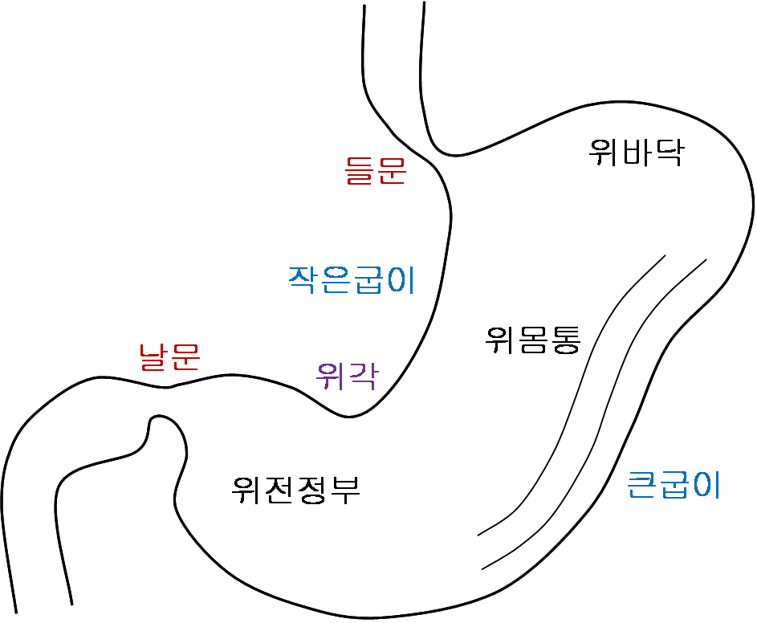
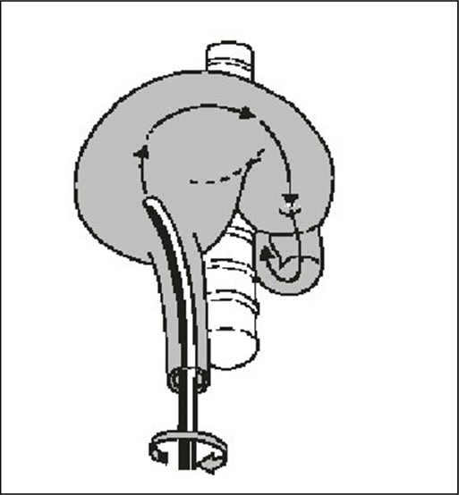
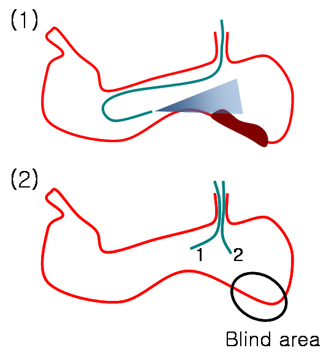
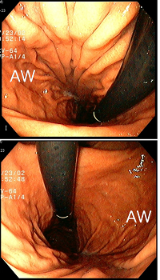
- 위치 표기:
angle - proximal antrum - mid antrum - distal antrum - prepyloric antrum순으로 상세히 적는다. - 위저부와 상부몸통의 경계는 관례적으로 saddle area를 기준으로 삼는다. 정해진 gold standard는 없다.
- 병소가 경계 부위면 "위몸통하부 대만과 근위 전정부 대만의 경계 부위"로 쓰고 원경·중경·근경 사진을 남긴다.
정상 위내시경은 특이 소견이 없는 상태를 말한다. 저자는 건강검진에서 약 20~30%에서 '정상' 판독을 붙이며, 습관적으로 CAG(만성위축성위염)·CSG(만성표재성위염)를 붙이는 관행을 경계한다. 아무리 봐도 정상이면 정상이라고 쓰는 것이 맞다. 요즘은 '정상'보다 '정상범위(WNL)'라는 유보적 표현을 선호한다.
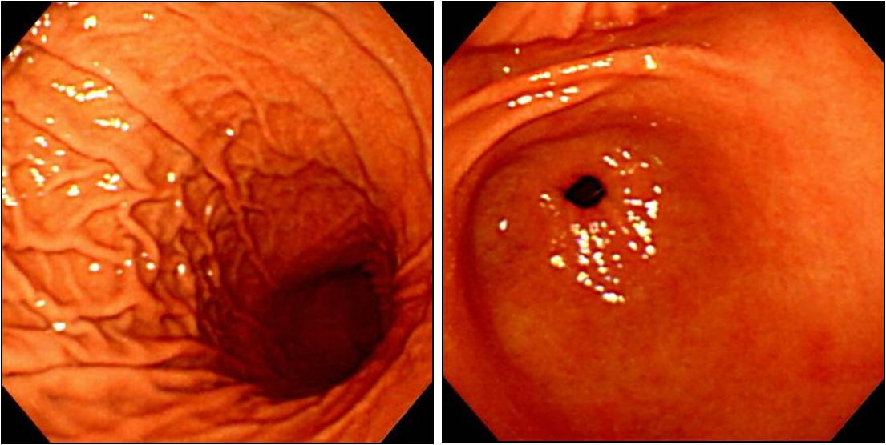
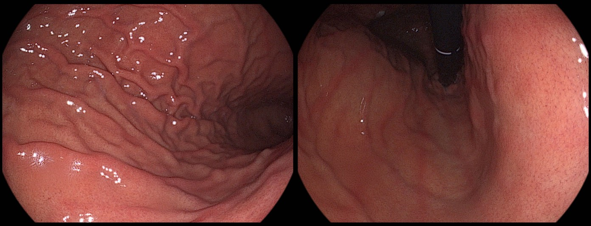
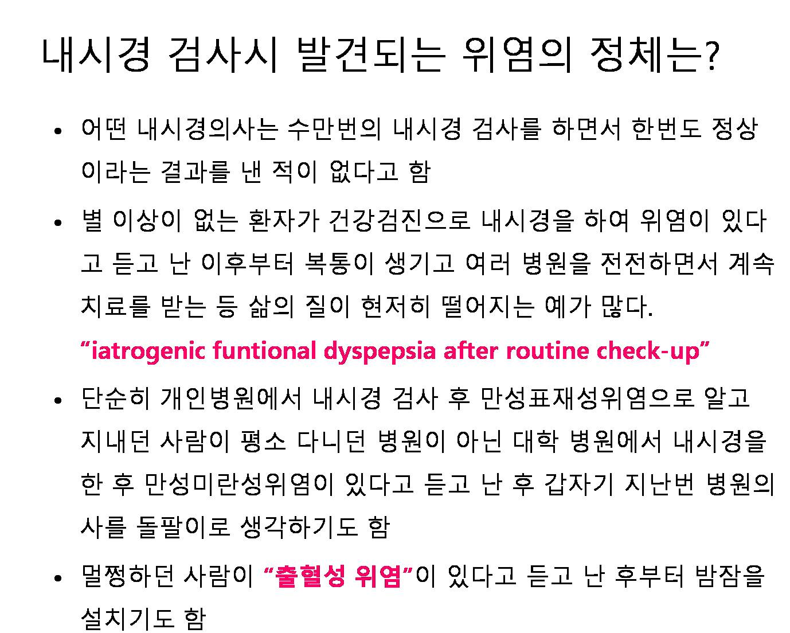
2. 위게실 (Gastric diverticulum)
위게실은 식도·십이지장 게실보다 드물다. 대부분 무증상이어서 치료가 필요 없다. 위게실의 75% 이상이 위저부 후벽, 위식도접합부 약 2~3 cm 하방, 소만에서 약 3 cm 떨어진 곳에 발생하며, 이 부위는 종근층 섬유가 분리되어 있어 취약하다. 이곳의 게실은 선천성 진성게실(true diverticulum)로 위벽 전층으로 구성되고 약 10%에서 이소성 췌장조직을 함유한다. 후천성 게실은 대개 전정부의 가성게실(pseudodiverticulum)이다.
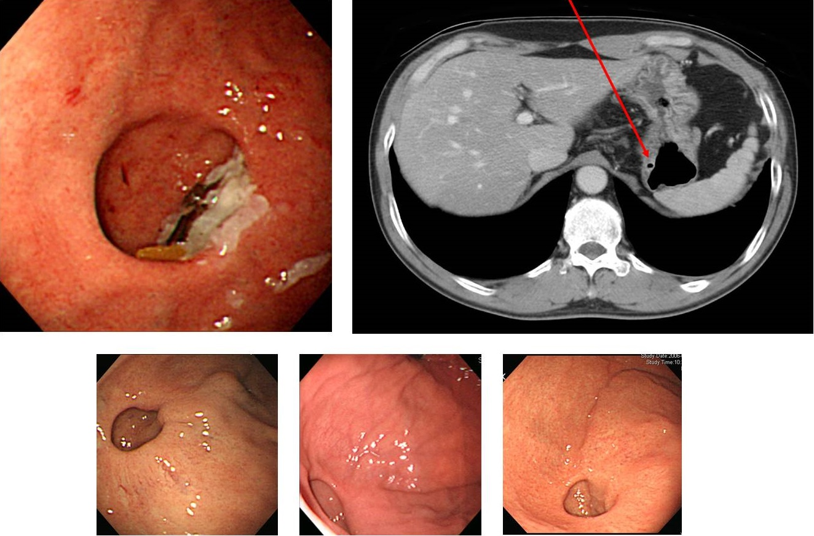
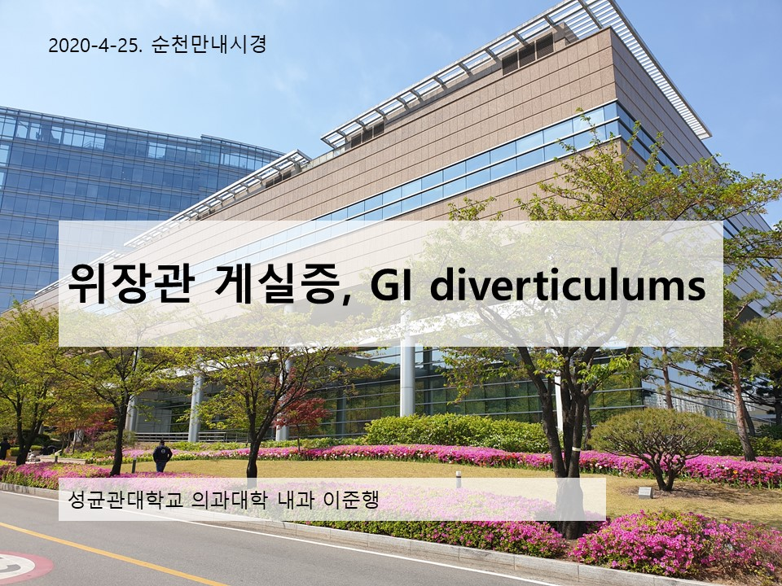
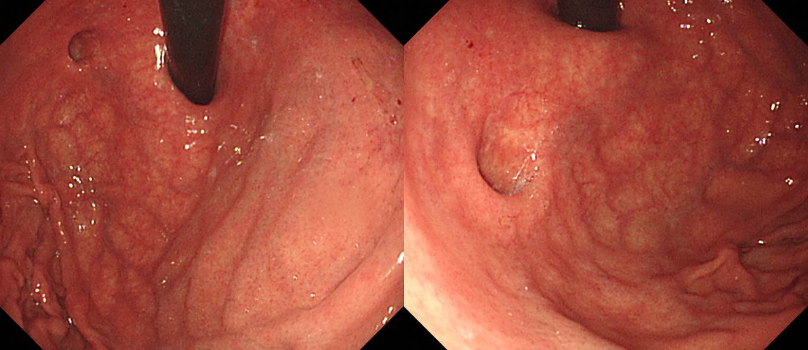
- 위암이 게실 내에서 발생한 증례가 보고된다. 게실 점막도 위점막이므로 가능하다.
- 게실을 발견할 정도로 구석까지 정성껏 살폈다는 뜻에서, 게실 발견율을 검사의 질지표로 쓰자는 논문이 있다.
- 게실에 음식물이 고였다가 검사 중 뒤늦게 나와, 다른 부위는 깨끗한데 위저부에만 음식물이 보일 수 있다.
- 무증상 → 경과관찰. 약물 불필요.
- 증상 동반 시 단기 산억제:
kcab 50mg qd pc 2-4wk - 출혈 등 합병증 → 지혈술·필요시 수술(매우 드묾).
3. Situs inversus (자리바뀜, 내장역위증)
내장이 좌우 역전된 드문 선천 기형이다. 대부분 정상생활이 가능하지만, 통증이 "반대쪽"에 나타나고 내시경 조작 방향이 반대라는 점이 임상적 핵심이다. 내시경이 위로 들어간 뒤 방향을 잡을 수 없을 때는 세 가지를 생각한다: (1) 내시경 기계 이상/공기 주입 부족, (2) 보만 4형 진행성위암, (3) situs inversus.
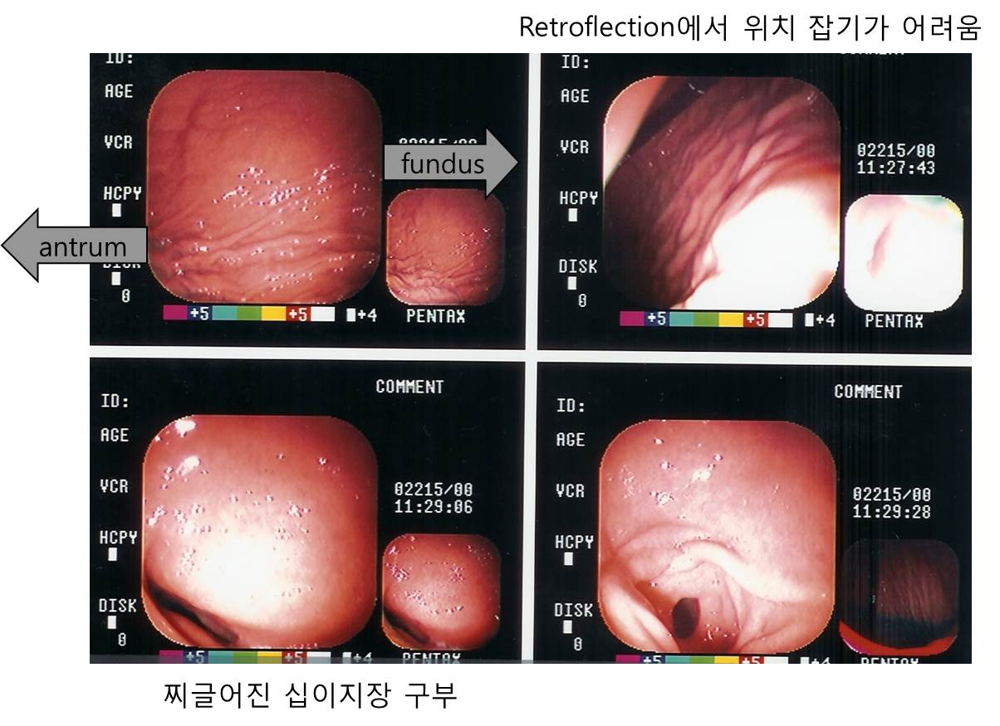
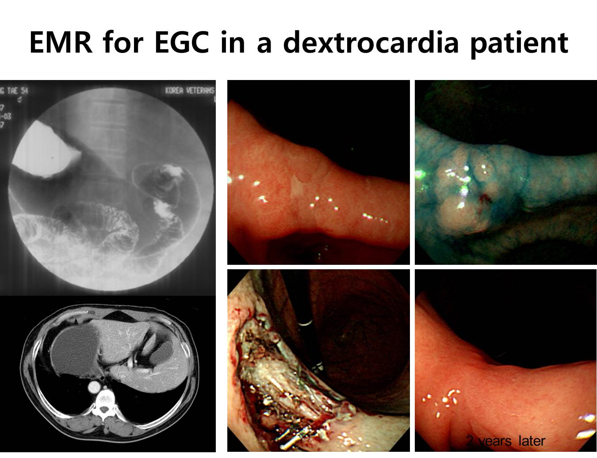
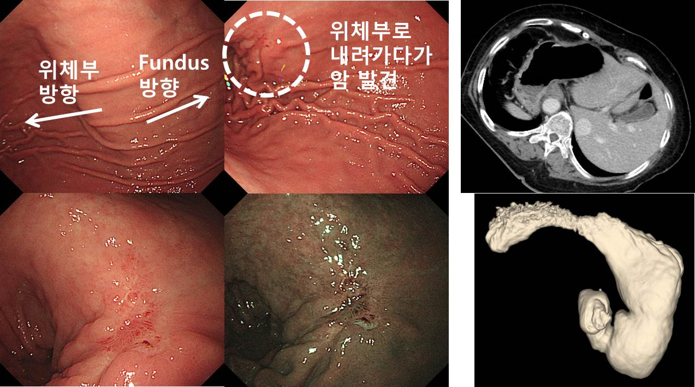
- 내시경 도중 방향이 이상하면 situs inversus를 의심한다.
- 내시경 "거울 기법(mirror technique)" — 모든 조작을 정상의 반대로. Cardia 도달 후 굽힘을 좌측으로 하고, handle 조작도 거울처럼 한다. 십이지장 구부 안에서 특히 중요하다.
- Right down decubitus position으로 자세를 취하면 편하다는 의견도 있다. ESD는 blind spot이 많아 더 어렵다.
4. 혈관이형성증 (Angiodysplasia)
멀리서 보면 붉은 점이지만 접근하면 확장된 혈관이 명확히 보이며, 대부분 하얀 띠(halo)를 가진다. 단발도 많지만 다발성도 적지 않다. 근육층을 통과하는 부위의 압력이 높아져 점막하 혈관이 확장되는 것으로 설명된다. NBI에서는 혈관이 검게 보이고 halo가 더 명료해진다. HHT(유전성 출혈성 모세혈관확장증, Osler-Weber-Rendu)는 상염색체 우성(ALK-1 변이)으로, 어릴 때부터 잦은 코피, 10세쯤 절반에서 위장관 출혈을 보이며 상부위장관에 병소가 심해 melena > hematochezia이다. 80%에서 가족력이 있다.
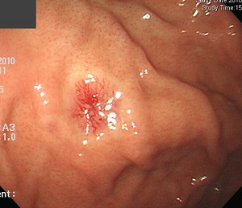
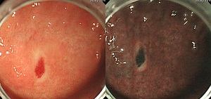
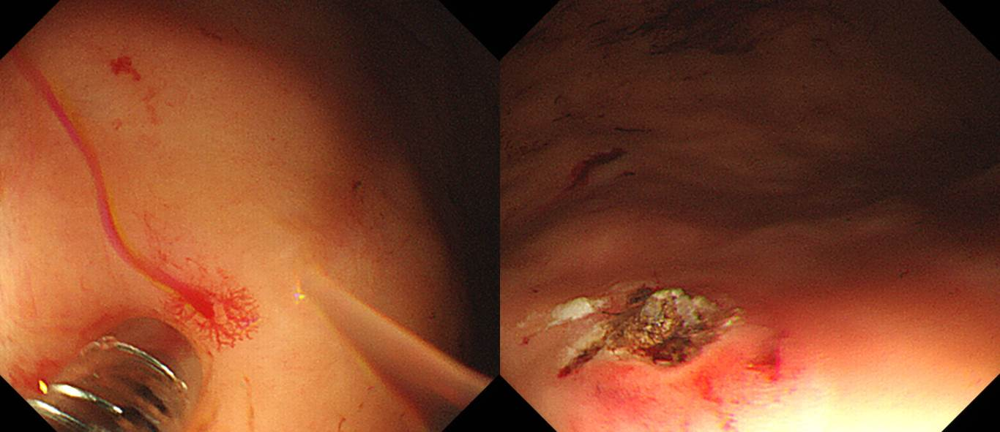
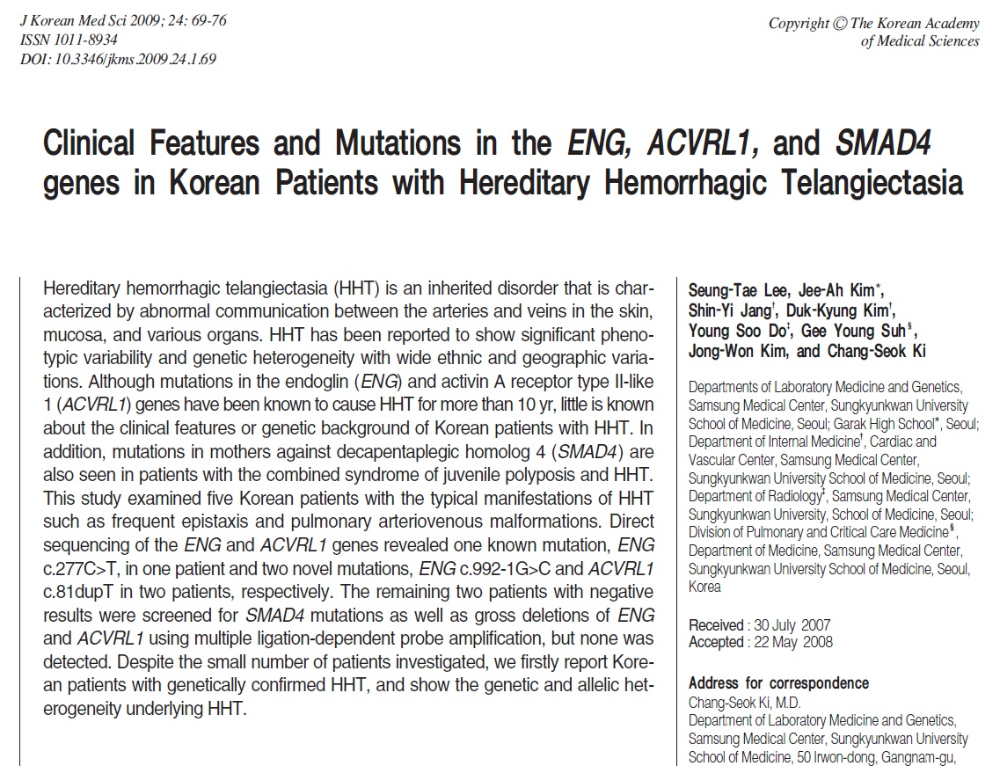
- 검진 중 출혈을 보여도 irrigation으로 저절로 멎고 수년간 변화 없으면 경과관찰로 충분하다.
- NBI·확대내시경이 혈관 형태 파악에 도움된다.
- HHT는 입술·구강·비강점막·손톱주위의 telangiectasia와 가족력을 확인한다. 유전자는 ENG, ACVRL1(ALK-1).
- 출혈 병소 → 내시경
APC(아르곤 플라스마 응고)소작술. - 다발성·재발성 출혈 → 철분 보충, 필요시
octreotide, HHT는estrogen·aminocaproic acid시도. - 출혈성 빈혈 동반 시 수혈·철결핍 교정.
5. Helicobacter pylori — 감염 개요와 진단
H. pylori는 위점막에 정착하여 만성 활동성 위염을 일으키고, 소화성 궤양·위 MALT 림프종·위암의 주요 원인이다. 국내에서는 검사와 치료에 대해 여러 지침이 공존해 왔다. 정부는 2017년까지 위암·소화성 궤양에서만 치료를 인정했으나 2018년 1월 1일부터 모든 H. pylori 감염증 치료를 합법화했고, 적응증에 따라 일반 급여와 100/100(약값 전액 본인부담) 선별급여로 나뉜다. 저자의 입장은 "검사 대상 선정은 보수적, 치료 대상 선정은 적극적"이며, 특별한 금기가 없는 한 모든 감염자를 치료하는 것을 선호한다.
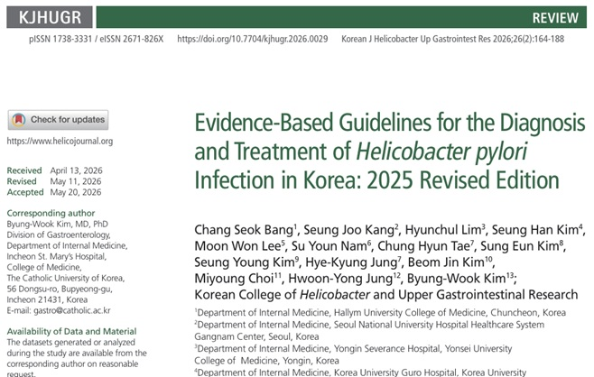
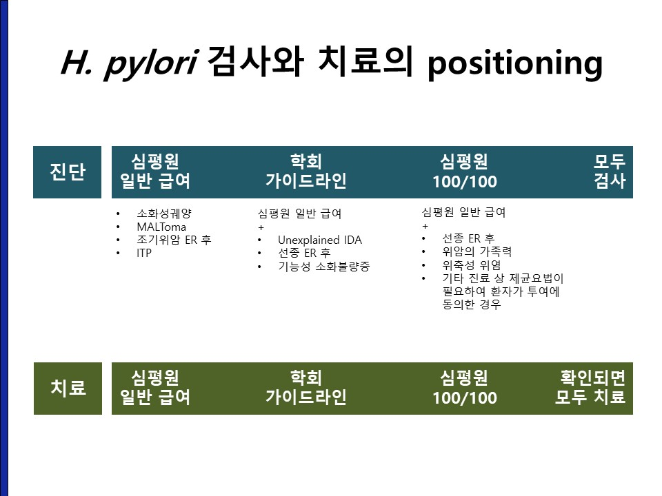
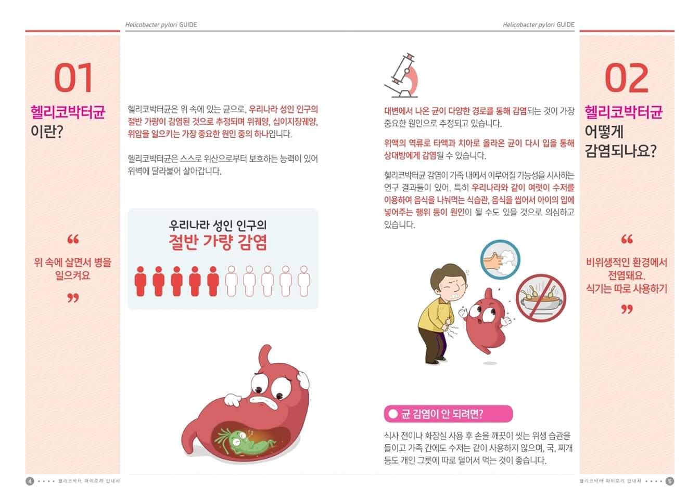
진단
- 내시경 조직검사(H&E/Giemsa), CLOtest(rapid urease test), 요소호기검사(UBT), 혈청항체검사(serology), 대변항원검사.
- 내시경 육안소견만으로 감염을 진단하는 것은 아직 reliable하지 않다. 조직검사·CLOtest·UBT 중 하나가 양성이면 양성으로 판단한다.
- 모든 제균치료 후에는 제균 성공 여부를 반드시 확인해야 한다. UBT가 가장 좋고, CLOtest·Giemsa를 반복할 수도 있다. 위궤양은 추적 내시경이 필요하므로 UBT + Giemsa 이중 확인을 하기도 한다.
- UBT는 PPI 복용 시 위음성이 흔하므로 PPI는 2주, H2RA는 1주 끊고 시행한다.
- 조직검사 4번 만에 위암이 나온 증례가 있을 만큼 위음성이 흔하다. 강하게 의심되면 반복 검사한다.
- 제균 후 UBT 음성이던 환자가 1년 후 양성이면 재감염보다 재활성화(위음성) 가능성이 높다. 특별한 이유 없이 재검할 필요는 없다.
6. H. pylori 제균 적응증과 표준 처방
대한헬리코박터학회 가이드라인이 2025년 제5차로 개정되었고, 저자는 2026년 7월부터 이에 맞춘 표준 처방을 사용하고 있다. Clarithromycin 내성이 높은 우리나라에서는 전통적 clarithromycin 포함 삼제요법을 더 이상 일차로 권하지 않고, 동시치료(concomitant therapy, 10일)나 bismuth 포함 사제요법(mBQT)을 일차 경험적 처방으로 쓴다.
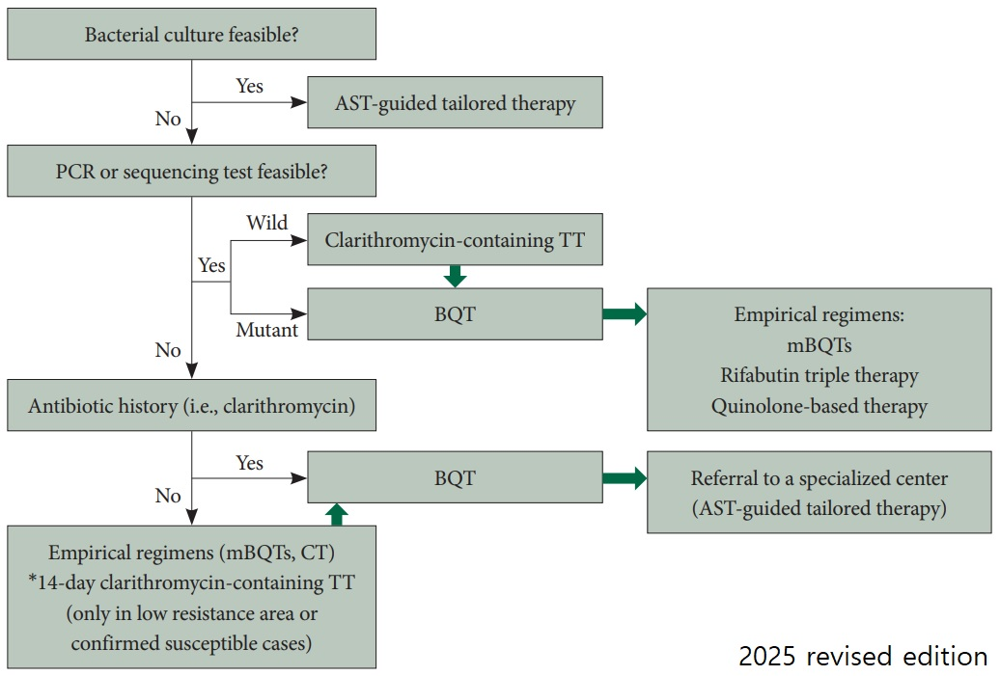
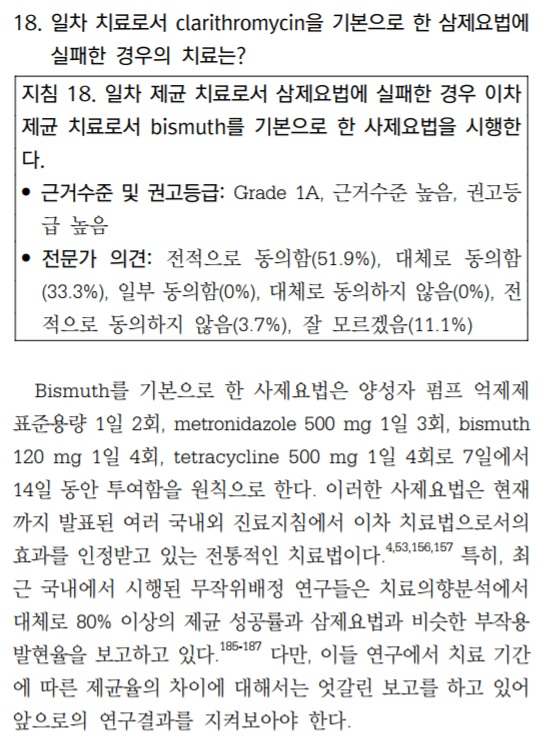
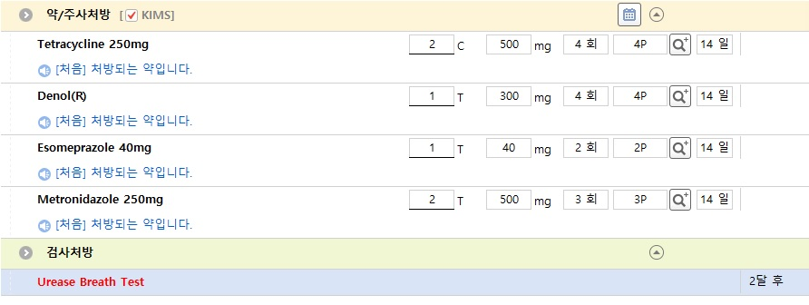
- 일차(경험적):
amox 1g bid pc + clarithro 500mg bid pc + PPI bid pc 14d— 고전적 삼제요법(내성이 높은 국내에서는 제한적) - 일차(동시치료, 2025 가이드라인 선호):
PPI bid + amox 1g bid + clarithro 500mg bid + metronidazole 500mg bid 10d - 이차(Bismuth 사제요법):
PPI bid + bismuth 220mg bid + metronidazole 500mg tid + tetracycline 500mg qid 14d - 삼차:
PPI bid + rifabutin 150mg bid + amox 1g bid 14d(pancytopenia 유의) - 사차:
PPI bid + levofloxacin 250-500mg bid + amox 1g bid 14d - 제균 확인: 치료 종료 8주 후 UBT.
- DeNol 300mg = elemental bismuth 120mg이다. 가이드라인의 "bismuth 120mg"은 DeNol 300mg으로 처방한다.
- 사제요법에서 검은 변이 나올 수 있다 — DeNol 때문이며 저절로 좋아진다.
- 제균 성공률은 1차 약 78% 수준. 5%는 1·2차 치료에도 없어지지 않는다.
7. H. pylori 제균치료 투약 시점
PPI를 식전에, 항생제를 식후에 주는 것이 이론적으로는 이상적이지만, 실제 연구에서는 식전·식후 투여 간 제균율 차이가 없다. 가장 중요한 성공요소는 순응도(compliance)와 항생제 내성이다. 따라서 복약을 어렵게 만드는 복잡한 schedule은 피하고, PPI와 항생제를 함께 식후 일괄 복용하도록 하는 것이 현실적이다. 사제요법도 하루 2~4회로 단순화해 처방한다.
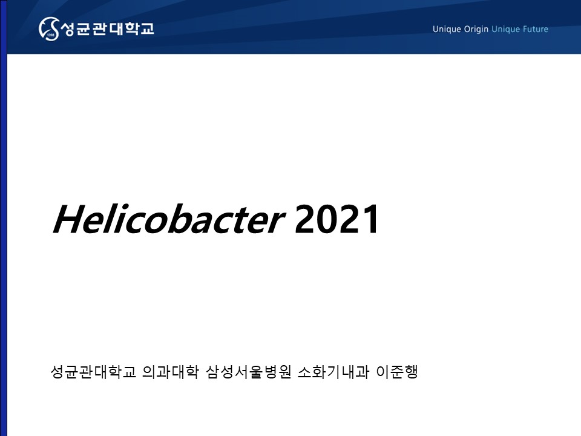
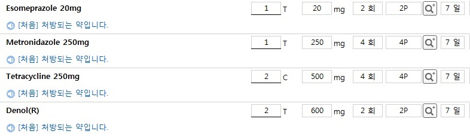
- PPI는 항생제와 반드시 함께 투여한다 — 위산 pH를 높여 항생제 감수성을 높이기 위함이다.
- 정장제(probiotics)를 함께 복용하려면 항생제와 2시간 이상 간격을 둔다.
- 완벽하게 지키기 어려운 환자에게는 "식후 30분" 일괄 복용을 허용하고, 순응도를 우선한다.
8. 항생제 내성과 맞춤치료 (Tailored therapy)
국내 H. pylori 항생제 내성률은 clarithromycin 17.8%, metronidazole 29.5%, amoxicillin 9.6%, tetracycline 0%, levofloxacin 37.0% 수준이며, 대부분의 항생제에서 20% 이상이다. 그러나 모든 항생제에 내성인 경우는 많지 않아 체계적으로 치료하면 대부분 치료할 수 있다. 배양·감수성 검사를 통한 맞춤치료가 경험치료보다 우월한지는 명확하지 않으며, 엄밀한 연구에서도 경험적 동시치료와 제균율 차이가 없었다.
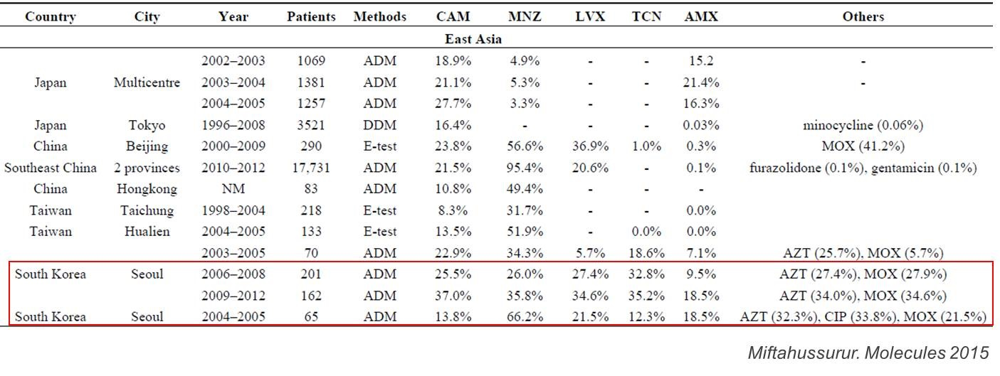
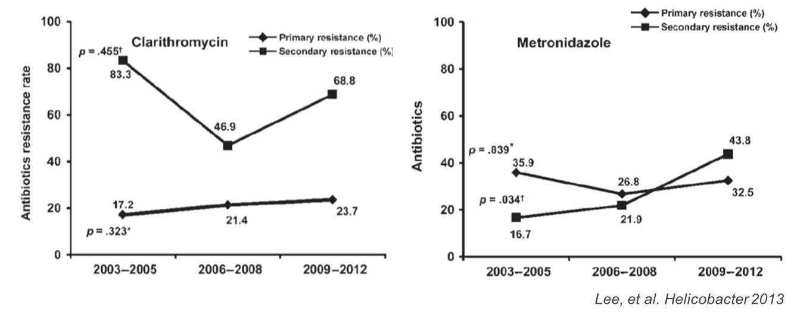
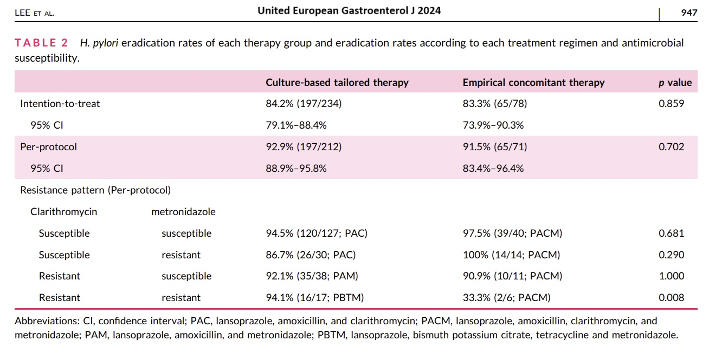
- 제균율이 낮은 것은 약을 잘 먹지 않기 때문이지, 내성이 유난히 많기 때문이 아니다.
- 내성 검사는 배양이 어렵고 결과와 실제 투약 결과가 잘 맞지 않으며 치료 option이 제한적이라, 일상적으로는 지역 내성 패턴에 따른 경험적 처방을 한다.
- Clarithromycin 내성 유전자(PCR) 결과에 따라 clarithromycin을 넣고 빼는 전략이 쓰이기도 한다.
9. 특수한 상황의 제균치료
만성 신질환·신장이식, 페니실린/세팔로스포린 알러지, 임신, statin·warfarin·colchicine 복용, 소아청소년, 저체중 등에서는 약제 선택과 용량 조절에 주의가 필요하다.
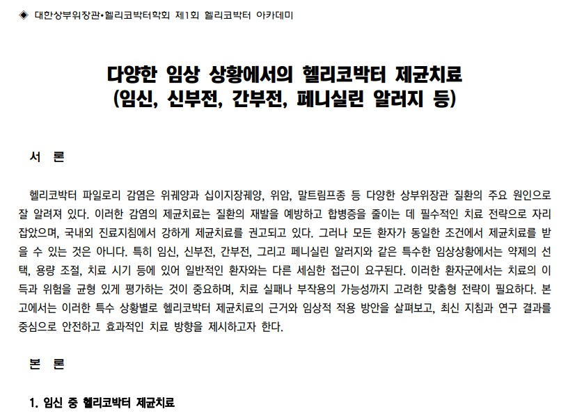
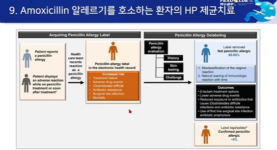
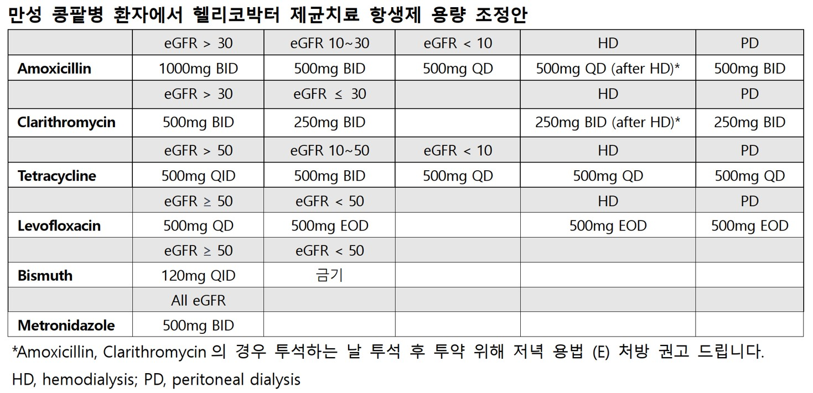
- 만성 신질환: GFR 정상이면 정상 용량, 감소 시 감량. 복잡하면 bid 처방을 qd로 바꿔 총 용량을 절반으로. 신부전에서 bismuth는 금기(AKI). CCr 30 미만에서 half dosing.
- 신장이식: clarithromycin은 CYP3A4 강력 억제제로 tacrolimus·cyclosporine·sirolimus 농도를 급상승시킨다 → 가능하면 회피, bismuth 포함 사제요법 고려.
- 페니실린 알러지: (1)
PPI + clarithro + metronidazole또는 (2)PPI bid + bismuth 220mg bid + metronidazole 500mg tid + tetracycline 500mg qid 14d. 진짜 알러지 여부는 알러지 검사(delabeling)를 권한다. - Metronidazole 알러지: bismuth 사제요법에서 metronidazole을 amoxicillin으로 대체.
- 임신: 제균치료는 출산·수유 후로 연기. Misoprostol은 절대 금기. 필요시 H2RA/PPI는 비교적 안전.
- Statin 복용: 근육병증/rhabdomyolysis 위험 → clarithromycin 복용 기간 동안 statin을 일시 중단.
- Warfarin 복용: INR이 therapeutic range인지 확인 후 시작. INR에 가장 영향이 큰 것은 metronidazole. PPI는 상호작용 적은 pantoprazole 선택. 치료 중간 INR 재검(optional).
- Colchicine 복용: clarithromycin과 병용금기 → colchicine 감량 또는 회피.
- 소아청소년: PPI-AMO-CLA → 실패 시 PPI-AMO-MET. Tetracycline은 소아에게 쓰지 않는다.
- 저체중(40kg 전후): amoxicillin은 성인 용량 그대로, clarithromycin은 통상 또는 절반 용량.
- 가장 흔한 부작용은 미각장애(7%)·설사(7%)·오심(6%)·복통(3%)이며 대부분 경증·단기간이다. 복약 중단율은 약 1.3%.
- Bismuth 사제요법이 가장 잘 견디기 어렵다(부작용 37%).
- Clarithromycin에 의한 환각/정신증(antibiomania)이 드물게 보고된다 — 투약 1~5일 내 발생, 중단 시 1~3일 내 회복.
10. H. pylori FAQ
- Q. 위암 예방 목적으로 제균해야 하나? 확실히 위암은 줄고 위암 사망도 약간 줄지만 all-cause mortality는 변화가 없다는 자료도 있다. 우리나라는 위암 예방 목적의 제균을 정부가 권하지 않으나, 저자는 20세에 치료하자고 비공식적으로 주장한다. 30~40세 이상은 내시경 후 치료한다.
- Q. 제균 후 UBT를 8주에 하는 이유는? 4주면 충분하나, 궤양 추적검사를 보통 8주에 하므로 UBT도 8주로 통일한다.
- Q. 제균 후 UBT 음성인데 CLOtest/조직검사가 양성이면? UBT는 위음성 가능성이 있어 한 가지 검사만으로 완벽하지 않다. 두 검사가 다를 때는 신중히 해석한다.
- Q. 재감염률은? 한국인 약 2.94~3.51%/년. 대부분 제균 후 2년 내 진단되어 재감염이 아닌 재활성화로 오인된다. 구강위생 불량·가족 중 활동성 감염·술잔 돌리기가 위험요인.
- Q. 구취 치료를 위해 제균하나? 구취의 원인은 구강질환(>90%)·이비인후과질환(>8%)이 대부분이다.
11. 만성위염 개요와 Kyoto 위염 분류
만성위염은 매우 흔하지만 내시경적 평가의 일관성이 낮아 치료 방침 결정의 근거로 삼기 어렵다. 만성위염의 내시경 분류로는 Sydney 분류, Kyoto 내시경적 위염 분류(2013, 일본 내시경학회) 등이 있다. Kyoto 분류는 위염을 Hp infected / Hp uninfected / After Hp eradication으로 나누고, A(위축성)·M(화생성)·H(비후성)·N(결절성)에 점수를 매긴다. 저자는 Kyoto 분류가 subtype의 합이 1이고 교집합이 없어야 한다는 분류법의 요건을 갖추지 못해 "분류법"이라기보다 "헬리코박터 위염의 내시경 소견을 정리한 자료집"으로 보는 것이 타당하다고 본다.
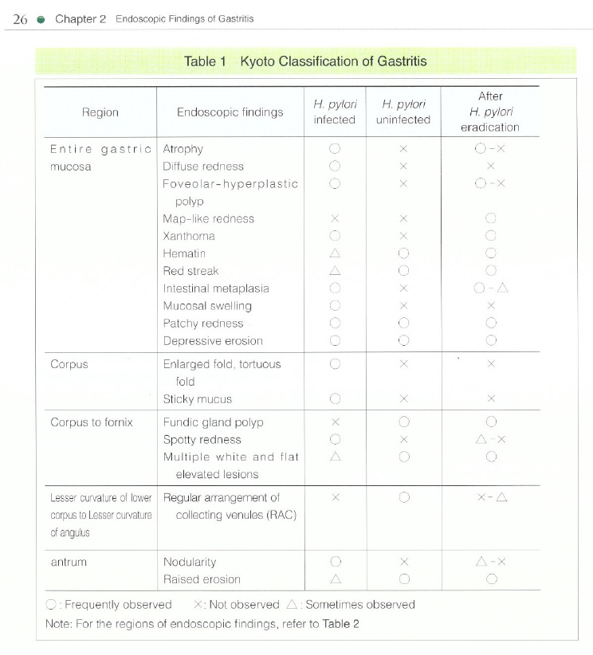
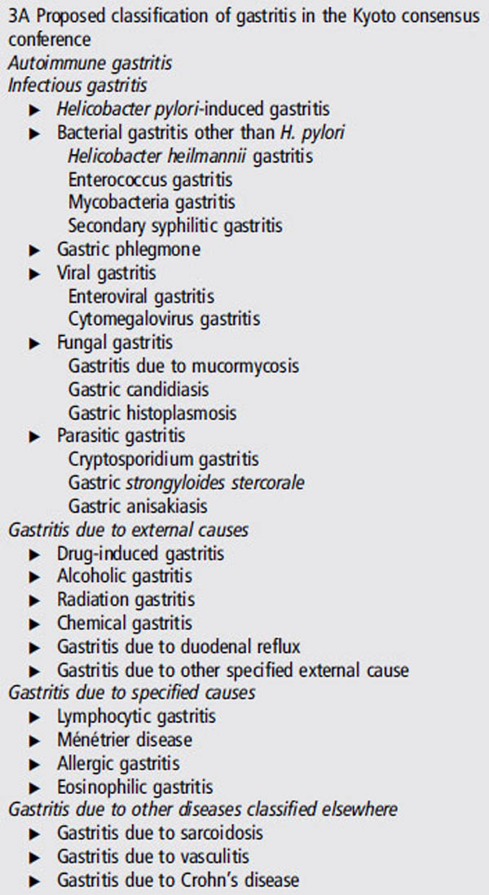
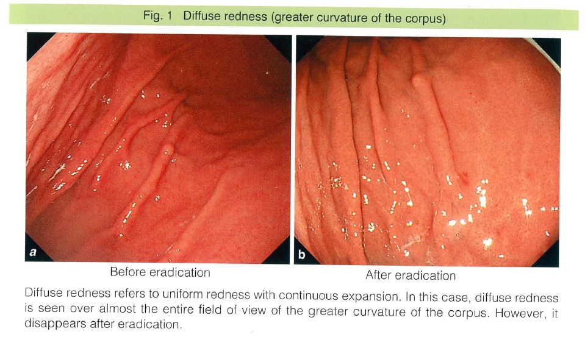
- 점수: 위축(0 C0-1 / 1 C2-3 / 2 O1-3), 장상피화생(0/1/2), 주름비대(0/1), 결절(0/1), 미만성 발적(0/1/2).
- 총점 2점 이상이면 H. pylori 감염 시사, 4점 이상이면 위암 위험도가 높다는 의견이 있다.
- 국내에서는 diffuse redness와 spotty redness를 명확히 구분하지 않고 혼용한다.
12. 쓰지 말아야 할 용어 — 담즙 역류
'담즙 역류성 위염(bile-reflux gastritis)'은 내시경 결과지에서 자주 보지만, 위에 담즙이 역류하는 것은 정상일 수 있고 일시적일 수 있으며 염증·증상과의 관련성이 입증되어 있지 않다. 십이지장/소장 폐쇄로 인한 역류가 아니라면 무시할 것을 권한다. 출혈성 위염과 담즙 역류성 위염은 대표적으로 쓰지 말아야 할 진단명이다. PPPD 수술 후에는 담즙 역류가 더 심할 수 있으나, 원래 그런 것이므로 역시 언급할 필요가 없다.
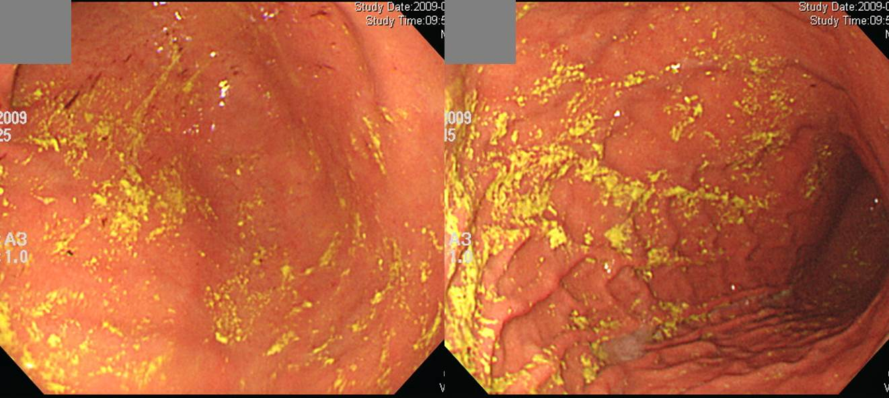
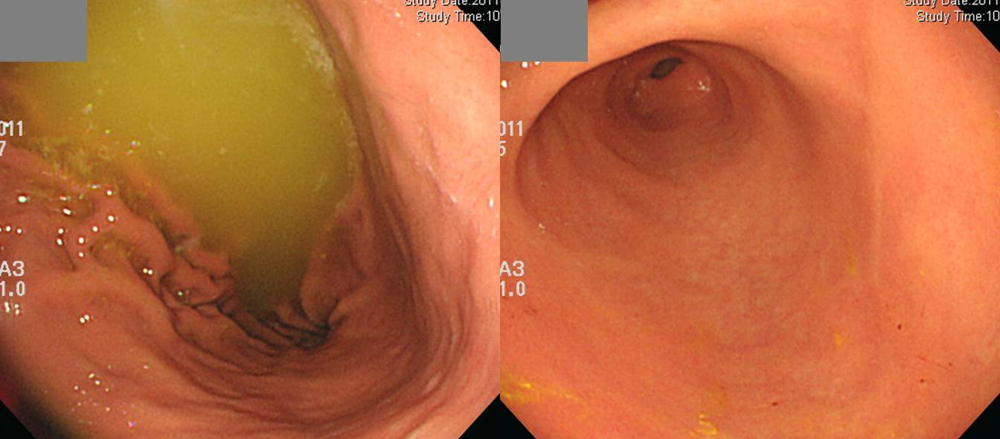
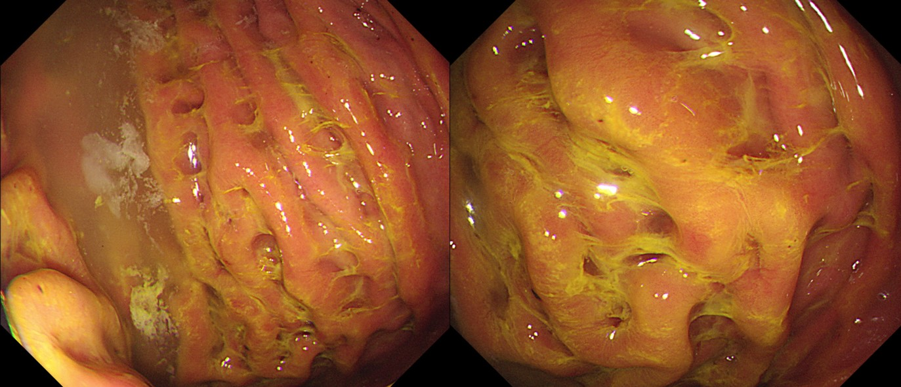
13. H. pylori 위염 (Helicobacter gastritis)
H. pylori 위염의 특징적 소견은 위체상부·분문부의 점상 반점(spotty redness), 미만성 발적(diffuse redness), 림프여포성 위염, 위점막주름 비후, 삼출물이다. 만성으로 진행하면 위축성·화생성 변화를 동반한다. H. pylori 음성 위는 위축·화생 변화가 없고 점액이 맑으며 RAC(regular arrangement of collecting venules)가 잘 보인다.
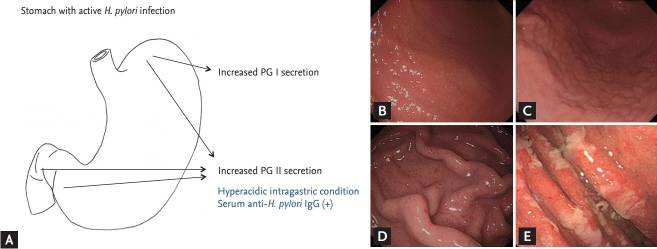
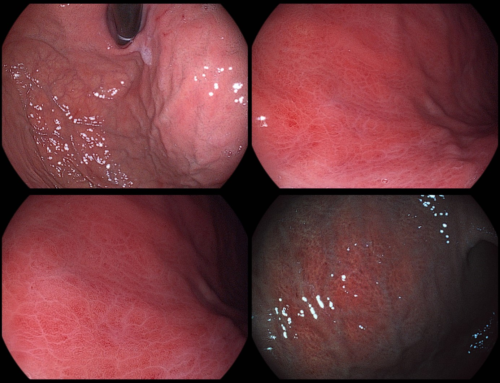
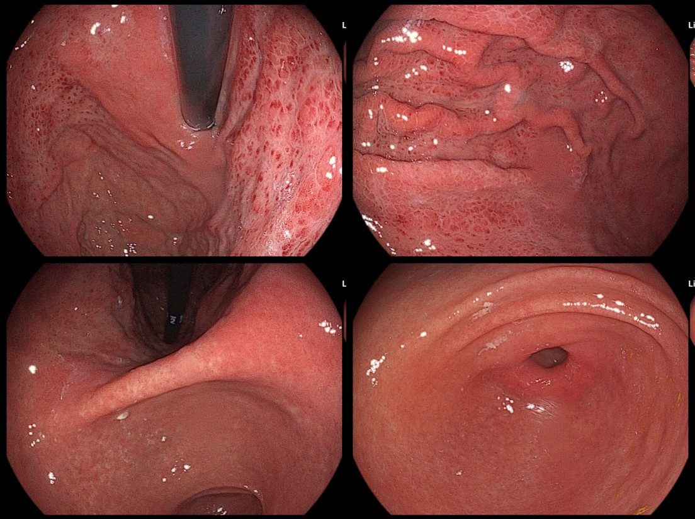
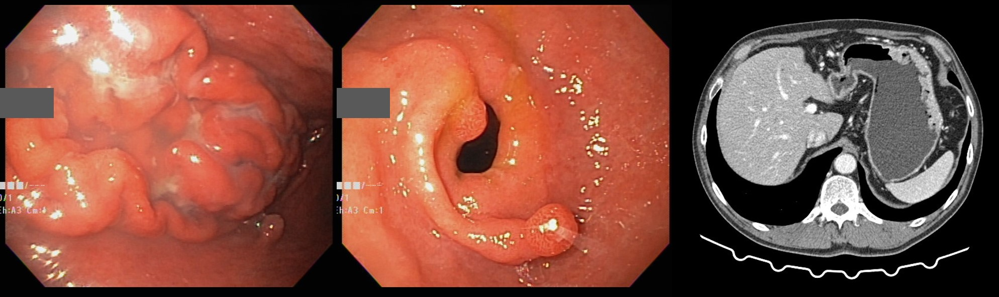
- 일본의 '급성 H. pylori 감염'은 통상의 급성이 아니라 "아직 위축성 변화가 오지 않은 상태"를 뜻한다. 일본식 '출혈성 위염'은 토혈/혈변을 일으키지 않으므로 부적절한 용어다.
- RAC는 H. pylori 비감염 위의 특징이나, 임상적 의의를 크게 부여할 필요는 없다. "깨끗한 위를 봐서 기분이 좋다" 정도로 넘어간다.
- 비특이적 상부위장관 증상이 있는 환자에서 H. pylori 위염 소견이면, 환자가 명시적으로 요청하지 않았더라도 검사하고 제균을 시도하는 것이 좋다.
- H. pylori 확인 시 제균:
amox 1g bid pc + clarithro 500mg bid pc + PPI bid pc 14d(또는동시치료 10d/BQT 14d) - 제균 후 위염 소견은 서서히 호전된다. 8주 후 UBT로 확인.
14. 비위축성 위염 (Non-atrophic gastritis)
대부분의 만성 비위축성 위염은 H. pylori 감염과 관련되며, 위치에 따라 전정부위염(antral-predominant)과 위전역염(pangastritis)으로 나눈다. 미만성으로 호중구 중심의 염증세포가 침윤되고("active gastritis"), 상피세포 손상·점액 감소·미란 등이 보이며, H. pylori 감염 시 종자중심을 가진 림프여포가 발견된다. 대부분 증상이 없고 위암 발생률도 증가하지 않는다.
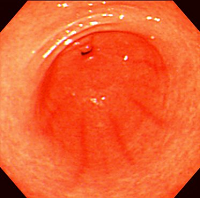
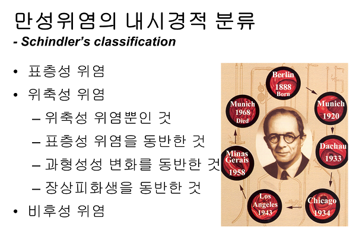
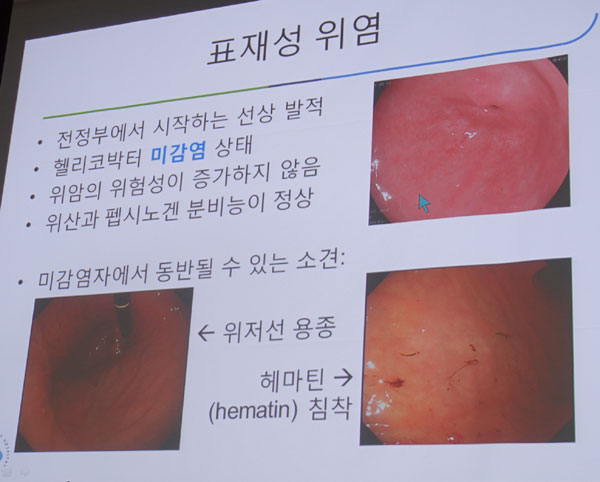
- 넓은 의미의 CSG(Schindler)는 Hp 감염자가 많고, 일본 Kyoto 분류의 CSG(최근 red streaks)는 Hp 미감염자의 소견이다. 같은 용어가 정반대 맥락으로 쓰이므로 일본 문헌을 볼 때 주의한다.
- 일본은 2018년부터 erosive gastritis → gastric erosions, chronic superficial gastritis → red streaks로 용어를 변경했다.
15. 위축성 위염 (Atrophic gastritis)
다초점성 위축성 위염은 산재된 미만성 위점막 위축과 장상피화생으로 특징지워진다. 위축이 일어나는 부위는 고유선(proper gland)이며 선와상피는 오히려 과형성되기도 한다. 내시경 소견은 창백하고 반짝이는 점막, 현저한 점막하혈관, 위주름 소실이다. 주로 전정부에서 시작해 근위부로 진행하며, 위축부위와 비위축부위의 경계를 선경계(F-line)라 부른다. Kimura 분류는 위축 범위에 따라 폐쇄형(C)·개방형(O)으로 나눈다.
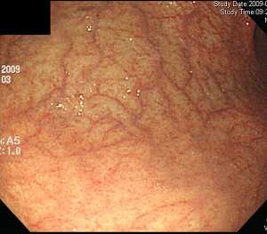
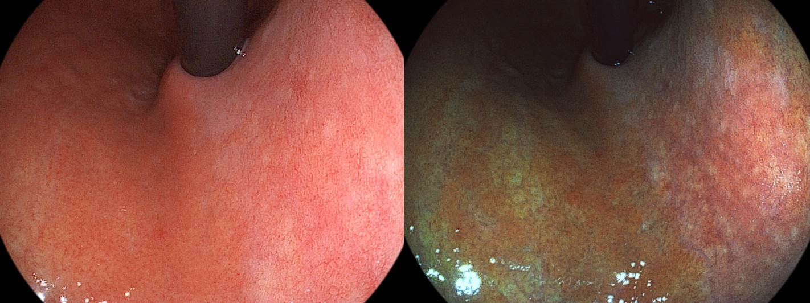
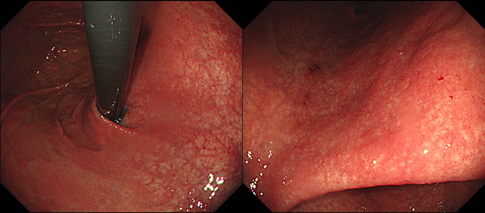
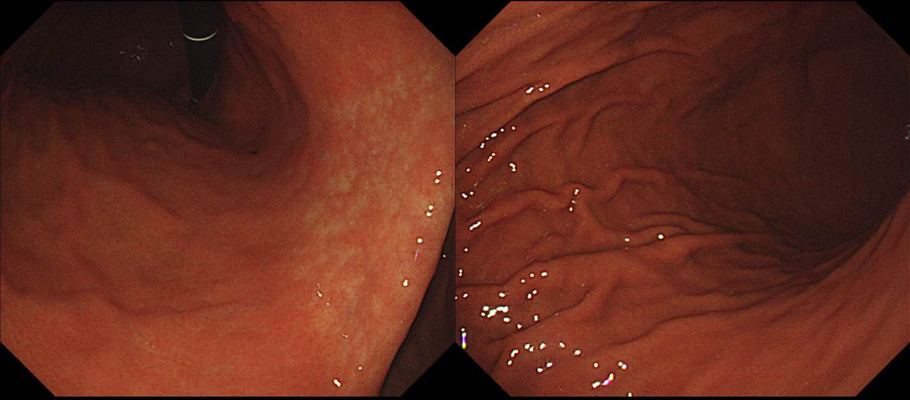
- 누가 봐도 뚜렷한 위축만 '위축성 위염'으로 부른다. 애매한 것은 정상으로 보는 편이 낫다. 공기를 많이 넣으면 창백해 보여 20대에서 과잉진단된다.
- Correa 가설(표재성→위축→화생→이형성→암)은 2/3 정도 맞고 1/3은 틀린 가설이다. 위축·화생 없이 발생하는 위암도 많다.
- "위가 늙었다"는 무례한 표현은 쓰지 않는다. 사실보다 의미를 설명한다.
- 펩시노겐 I/II 비는 위축의 중증도와 상관되나 단독으로 임상적 의의를 부여하기는 어렵다.
- 뚜렷하게 입증된 약은 없다. 상식적 건강한 식생활 + 1년 후 위내시경이 핵심.
- 원하면 H. pylori 검사(비급여 UBT 4~5만원) 후 양성이면 제균치료.
- 증상이 있으면 대증적으로
kcab 50mg qd pc 4wk또는rebamipide 100mg tid pc.
16. 화생성 위염 (장상피화생, Metaplastic gastritis)
위점막이 장형(intestinal-type) 세포로 대치된 상태로, 위암의 전단계(전암성 병변)로 분류된다. 완전형은 소장점막과 유사(brush border, 성숙 흡수세포, 술잔세포, Paneth cell), 불완전형은 대장점막과 유사하다. 위암 위험은 불완전형, 특히 제 III형에서 증가한다. 내시경에서는 전정부와 위체부 연결부의 소만, 즉 위각부에서 시작되어 점차 전정부·위체부로 진행하며, whitish patch·metaplastic nodule로 보인다.
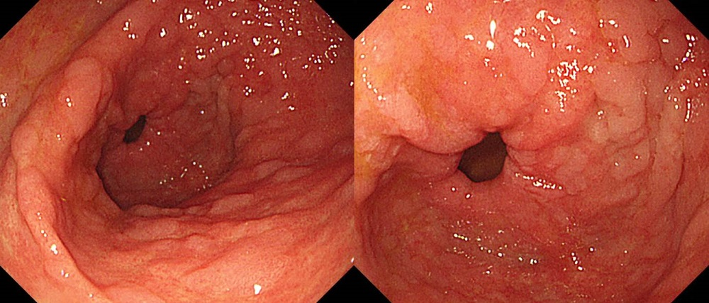
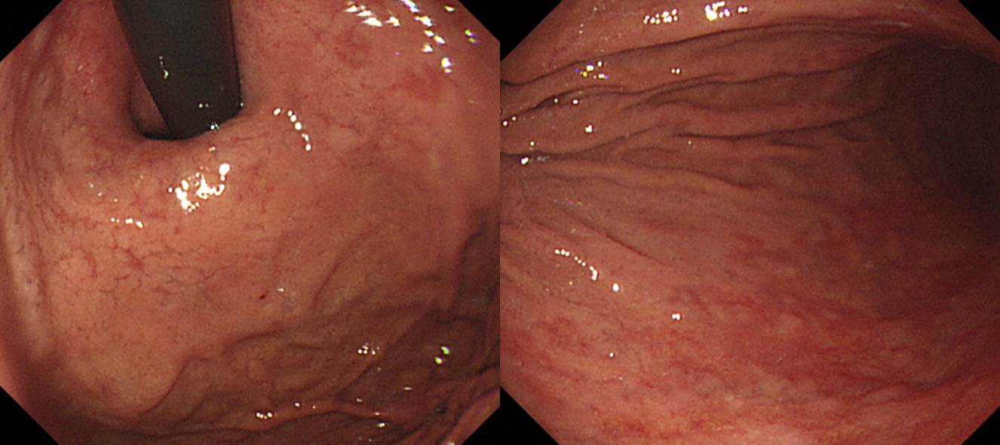
- 화생성 변화와 위축성 변화는 함께 관찰되는 경우가 많다 — "chronic atrophic and metaplastic gastritis".
- 화생성 변화가 심해 깜짝 놀라는 경우가 있고, 전정부는 미미한데 위저부에 심한 경우도 있다.
- 내시경으로 장상피화생을 정확히 아는 것은 어렵다. 지도상·백색 융기 병변이 단서다.
- 약물로 화생을 되돌리는 치료는 사실상 없다. 1년 후 위내시경 추적.
- H. pylori 양성이면 제균:
amox 1g bid pc + clarithro 500mg bid pc + PPI bid pc 14d— 진행 속도를 늦추는 데 도움이 된다. - 저염·항산화 식이, 금연·절주.
17. 미란성 위염과 단일 미란 (Erosive gastritis & single erosion)
미란은 점막의 괴사에 의한 결손으로 조직학적으로 점막근판(muscularis mucosa)을 넘지 않는 경우다. 점막과 같은 높이면 편평미란(flat erosion), 주위 점막이 융기되고 중심에 미란이 있으면 융기미란(raised erosion)이라 하고, 다발성 융기미란이 염주처럼 있으면 사마귀양/두창양 위염이라 부른다. 무수히 많은 미란이 산재하면 미란성 위염이다. 단일 미란은 두 가지 이슈가 있다: (1) 위궤양으로 과잉진단되는 문제, (2) 일부는 신생물(암)이라는 문제다.
- 궤양인지 암인지 구분이 어려우면 미란이다. NSAID 사용자를 제외하면 다발성은 대부분 미란으로 보는 것이 좋다.
- 미란은 benign, non-neoplastic lesion을 뜻한다. 다발성이면 '미란성 위염', 단발성이 염증성이면 'single erosion', 암·선종이 의심되면 r/o EGC, r/o adenoma로 쓴다. 모두 '미란'으로 쓰는 것은 부적절하다.
- 단일 미란은 육안 예측 정확도가 낮아 조직검사가 필요하다. 나쁜 결과는 10% 미만으로 추정된다.
- 증상성 미란성 위염:
kcab 50mg qd pc 4wk또는rebamipide 100mg tid pc - NSAID/aspirin 관련: 원인약 중단·조정, 필요시 지속 PPI 또는
famotidine 20mg bid - 약을 끊기 어려우면 H2RA/PPI를 먼저 쓰고, 효과 없으면 기록을 남긴 후 PPI로 변경한다. Prokinetics는 이 상황에서 거의 효과가 없다.
- 무증상 우연 발견 → 약물 없이 경과관찰로 충분.
18. Prepyloric erosion (날문인접 미란)
전정부 소만측 위주름에 미란이 관찰되는 경우가 많은데, overt한 궤양으로 발전하는 경우는 거의 없다. 위점막 일부가 날문으로 일시적으로 herniation되는 기계적 자극과 염증(일부는 H. pylori)이 함께 관여하는 것으로 추정된다. 대개 증상이 없고 치료가 필요하지 않다. 검진에서 "위궤양"으로 의뢰되는 대표적 과잉진단 대상이다.
- 증상 없이 prepyloric fold에 미란만 보이면 불필요한 약·추적검사로 환자를 고생시키지 않는다.
- H. pylori가 있는 환자는 제균 후 호전되기도 한다.
- 함몰부 edge가 불규칙하고 바닥이 평탄하지 않으면 위암을 의심한다.
- 대개 특별한 치료 불필요. 1년 후 검사에서 이상 없는 경우가 많다.
- H. pylori 양성이면 제균:
amox 1g bid pc + clarithro 500mg bid pc + PPI bid pc 14d - 증상 동반 시 산억제 단기:
famotidine 20mg bid 2wk또는kcab 50mg qd 4wk
19. 비후성 위염 (Hypertrophic gastritis)
위주름 폭이 6~7 mm 이상일 때 비후되었다고 한다. 정상 위주름은 공기로 팽창하면 편평해지지만, 비후된 주름은 팽창시켜도 펴지지 않는다. 거대주름의 원인은 많지만 가장 중요한 것은 악성(특히 보만 4형 위암)과의 감별이다. 복수·체중감소·복통이 있으면 보만 4형 위암을 고려한다. 보만 4형 위암은 조직검사에서 암이 안 나오는 수가 많아 CT를 함께 참조한다. 비후성 위염의 상당수는 H. pylori 감염에 의한 것이고 제균 후 호전되는 예가 많다.
- 악성: 보만 4형 위암, 악성 종양 직접침윤, 위 림프종/MALT 림프종.
- 양성: 비후성 위염, 위 아니사키스증, 위매독, Zollinger-Ellison 증후군, 호산구성 위장염, Menetrier 병, 위 Crohn 병, Cronkhite-Canada 증후군, CMV 감염, 위 결핵 등.
- 보만 4형 위암이 의심되면 follow up을 하지 말고 즉시 치료적 결정(수술)을 내려야 한다.
- H. pylori 양성이면 제균 후 호전을 기대:
amox 1g bid pc + clarithro 500mg bid pc + PPI bid pc 14d - 증상성 → 산억제 단기:
kcab 50mg qd pc 4wk - 보만 4형 위암 의심 → 내시경·외과·영상 다학제 평가 후 수술.
20. 출혈성 위염과 hematin
일반적으로 흔히 쓰는 "출혈성 위염"은 환자에게 큰 불안을 준다. 실제로 피가 줄줄 흐르거나 조금 전까지 흐르던 상황이 아니면 이 진단명을 쓰지 말 것을 권한다. RT-induced, checkpoint inhibitor-induced hemorrhagic gastritis 같은 특수한 경우만 예외다. Hematin 몇 개는 출혈성 위염으로 과잉진단되는 대표적 소견인데, aspirin/NSAID를 먹지 않는 사람의 몇 개의 hematin은 오히려 아주 건강한 위의 상징으로 해석된다 — 주로 H. pylori가 없는 깨끗한 위, H. pylori naive 또는 제균 후 소견이기 때문이다.
- 몇 개의 hematin → 약도 검사도 필요 없다. "표재성 위염의 소견"으로 해석. 저절로 좋아진다.
- 아스피린/NSAID 사용자라면 원인약 검토 후 필요시
PPI또는rebamipide 100mg tid pc. - Hematin이 많아도 그건 점막 capillary 출혈이고, ESD 출혈은 deep submucosa vessel 출혈이라 전혀 무관하다.
21. 림프여포성 위염 (결절성 위염, Lymphofollicular gastritis)
내시경에서 닭살 모양의 작은 결절(정확히는 과립)이 전정부와 위체하부에 관찰되는 형태다. 조직검사에서는 림프여포 형성과 선와상피 과형성이 보인다. 젊은 여성에서 흔하며 H. pylori 감염에 따른 면역반응의 결과로 추정된다. 내시경 소견에 따라 small granular type과 large nodular type으로 나뉜다. H. pylori 감염이 지속되면 결절이 납작해지며 소금후추(salt-and-pepper) 양상으로 변하고, 이후 위축성 또는 화생성 위염으로 진행한다.
- 과거에는 임상적 의의가 거의 없다고 보았으나, 최근 일본을 중심으로 미분화 조직형 위암과의 관련성이 제기되고 있다. 논란은 남아 있다.
- Corpus white spots(CWS)가 동반된 결절성 위염은 highly active 염증으로 diffuse-type cancer와 관련되므로, CWS가 보이면 제균치료를 서둘러야 한다는 보고가 있다.
- 저자는 Hp 양성 결절성 위염에서 제균치료를 하는 것이 좋다고 본다.
- H. pylori 검사 후 제균:
amox 1g bid pc + clarithro 500mg bid pc + PPI bid pc 14d(또는 동시치료/BQT) - 제균 후 과립·결절은 천천히 호전된다. 평균 30개월 추적에서 약 2/3에서 결절이 소실된다.
- 2년 후 결절이 남아 있으면 제균 실패/재활성화와 단순 지연을 육안·조직·Hp 검사로 구분한다.
22. AGML (급성위점막병변, Acute Gastric Mucosal Lesion)
AGML은 급성 복통·구토 등 심한 증상이 갑자기 발생하고, 내시경에서 다양한 크기의 출혈성 궤양·미란·hematin이 보이는 병이다. 술·담배·심한 스트레스, NSAID, 드물게 H. pylori가 원인이 된다. 건강검진에는 AGML이 없다. 무증상 성인에서 AGML이라는 진단을 붙이는 것은 적절하지 않다. 미란이 여러 개 있다고, hematin이 있다고 AGML이 아니다. Acute가 아니고 chronic이었던 것이다.
- 급성 염증기에 조직검사를 하면 atypical regeneration gland가 많아 위암을 의심하게 된다. 전형적 AGML에서는 가급적 조직검사를 하지 말고 몇 주 후 재검으로 확인한다.
- 증상을 동반한 전형적 AGML은 육안소견으로 99% 알 수 있다. 예외적으로 위벽이 현저히 비후되면 림프종을 감별한다.
- 무증상 성인의 검진에서 AGML 병리진단이 나오는 것은 바람직하지 않다.
- H. pylori 검사는 필요하지 않다. 심한 곳에서 조직검사를 3점 정도(H&E)만 한다.
- 금식 + 수분·전해질, 산분비억제:
esomeprazole 40mg IV qd-q12h→ 경구 전환, 또는kcab 50mg qd pc. - NSAID 관련이면 원인약 중단·조정.
- 심한 출혈 → 내시경 지혈술 + 고용량 PPI.
23. 방사선 관련 위장관 손상 (Radiation-induced GI injury)
복부·골반 방사선치료 시 위·소장·대장이 조사야에 들어가면 손상을 받는다. 간세포암의 방사선치료 후 미란성 위염 16%, 위궤양 9%, 미란성 십이지장염 17%, 십이지장궤양 16%가 관찰되었다는 보고가 있다. 위 V25, 십이지장 V35가 합병증(≥grade 2)의 가장 좋은 예측인자였고, 임상변수보다 조직이 받은 방사선 양이 결정적이었다. 위궤양이 심하면 천공·대량출혈이 발생할 수 있다. 출혈성 위염/십이지장염은 APC ablation으로 치료하는 것이 보편적이나, 궤양에서 PPI/H2RA의 효과는 낮다.
- 방사선 직장염은 간헐적 출혈을 보이며 Vienna rectoscopy score(VRS)로 telangiectasia 중증도를 평가한다.
- 내시경 도중 가벼운 출혈은 먼저 진단에서 멈추고, 정상 전처치 후 입원하여 APC를 시행하는 것이 안전하다 — 소작술 자체가 출혈을 조장할 수 있다.
- 항궤양제 효과가 제한적이어도 PPI를 쓸 수밖에 없다. 점막보호제를 추가하기도 한다.
- 출혈성 위십이지장염 →
APC ablation, 필요시 반복. - 궤양 →
PPI또는H2RA(효과 제한적) + 점막보호제. - 천공·난치성 출혈 → 수술 고려.
24. 자가면역위염 (Autoimmune gastritis)
위산을 분비하는 벽세포(parietal cell)가 파괴되어 위체부·위저부에 국한된 A형 위축성위염을 일으키는 만성 진행성 질환이다. 내시경에서 전정부는 비교적 깨끗한데 위체부·위저부의 위축이 심한 reverse atrophy가 특징이다. 국내 진단기준은 확립되어 있지 않지만, 일본 기준은 (1) 체부 우세형 중증 위축, (2) 항벽세포항체/항내인자항체 양성 또는 악성빈혈, (3) hypergastrinemia(>350 pg/ml)이다. 초기에는 내시경 소견이 경미해 진단이 늦어지는 경우가 많다(내시경 민감도 30%대 보고). 국내 유병률은 최소 1% 이상으로 추정된다.
- Reverse atrophy가 뚜렷한 자가면역위염의 진단에서 내시경의 역할이 중요하다. 체부 대만·소만, 전정부 대만에서 각각 조직검사(updated Sydney system) + chromogranin A로 ECL cell hyperplasia 확인.
- 혈청학적 검사는 early stage나 비전형에서 위음성이 있을 수 있어 내시경·조직·임상과 종합한다. 항벽세포항체(SMC 코드 BL502101)를 측정하면 원인 미상 위축성 위염 진단에 도움이 된다.
- NET 발생률이 높아 자가면역위염 환자의 상피하종양은 접근을 달리한다.
- 헬리코박터가 없는 자가면역위염은 complete 화생 + pseudopyloric metaplasia에서 멈추고 암은 잘 안 생긴다는 보고도 있다. 헬리코박터 감염이 동반되면 위암 가능성이 있다.
- 자가면역갑상선염·류마티스관절염·제1형 당뇨가 동반될 수 있다(thyro-entero-gastric autoimmunity).
- 장기 투약을 권하는 질환은 아니다. 1년에 한 번 혈액검사 + 위내시경(NET·위암 감시).
- 심해지면 vitamin B12·철분 결핍 보충, 종합비타민 1종.
- H. pylori 감염 동반 시 제균:
amox 1g bid pc + clarithro 500mg bid pc + PPI bid pc 14d - PPI 장기복용은 위암 발생률을 높인다는 보고가 있어 주의한다.
25. CMV 위염 (CMV gastritis)
Cytomegalovirus는 herpes virus의 일종으로 국내 성인 항체가 90~95%인 흔한 감염원이다. 대부분 무증상 초감염 후 잠복하다 reactivation한다. HSV와 달리 점막 심부·내피세포·위선에 감염된다. 후천성면역결핍증, 신장·골수·장기 이식 후 등 면역억제 상태에서 기회감염으로 발생하지만, 면역이 정상인 성인에서도 드물게 발생한다. 복통·발열·비전형적 림프구증이 발생하고, 내시경에서 궤양을 동반한 위점막 비후로 보이며, 조직에서 Owl-eye intranuclear inclusion이 특징적이다.
- 보만 4형 진행성 위암과 유사하게 보여 감별이 어렵다. 면역억제·이식·항암·고령 맥락을 함께 읽는다.
- 면역정상 성인의 CMV 위염도 존재하며, 보만 4형 위암 의심으로 의뢰되는 경우가 있다.
- 조직검사(면역조직화학 포함)가 진단의 핵심이다.
- 면역저하·중증:
ganciclovir 5mg/kg IV q12h→valganciclovir 900mg bid po, 바이러스혈증 소실까지. - 불응·부작용 시:
foscarnet,cidofovir(감염내과 협진). - 면역정상 경증은 PPI + 경과관찰만으로 호전되는 경우가 있다.
- 궤양 출혈 시 내시경 지혈 + PPI.
26. 위매독 (Gastric syphilis)
매독(Treponema pallidum)에 의한 위 침범으로, 2기·3기에 발생한다. 매독 환자에서의 빈도는 드물지만 최근 매독 자체가 증가하면서 위매독도 늘고 있다. 내시경 소견은 heaped-up·결절성 변연의 미란성 위염 또는 위궤양, 비후되고 부종성인 주름이며, 위암·비후성 위염과 감별이 어렵다. 병리 소견은 시사적이지만 진단적이지 않다. 50년간 발표 증례의 체계적 고찰에서 상복부 통증/불편감이 92%로 가장 흔하고, 내시경에서는 다발성 궤양(48%)·결절성 점막·미란이 흔하며 전정부 침범(56%)이 가장 많았다.
- 큰 병변에 비해 증상이 경하고, 궤양 치료에 반응하지 않으면 위매독을 의심한다.
- 혈청 매독균 특이항체 및 비트레포네마 검사(RPR 등)로 진단한다.
- 위암·위 MALT 림프종과 감별이 어려워 "great imitator"라 불린다. H. pylori 유무와 무관하게 고려한다.
- 표준:
benzathine penicillin G 2.4 MU IM— 조기 1회, 후기잠복 3주간 매주. - 페니실린 알러지 시
doxycycline 100mg bid po 14d(조기) 또는 28일(후기). - 치료 후 임상·내시경 호전을 확인한다.
27. 소화성 궤양 개요 (Peptic ulcer)
소화성궤양(peptic ulcer)은 위산과 펩신 등 공격인자에 의해 점막하층(submucosal layer)이나 그 이하의 위장관벽에 결손이 생긴 상태를 말한다. 조직 결손이 점막층에만 국한되면 미란(erosion)이라 부르고 궤양과 구분하지만, 내시경으로 궤양과 미란을 정확히 구분한다는 것은 사실상 매우 어렵다. 이 때문에 미란을 궤양으로 과잉진단하고 불필요한 약을 처방하는 관행이 만연해 있으며, 이는 임상적으로나 보건재정적으로 큰 문제다. 궤양을 궤양이라 부르고 미란을 미란이라 부르는 단순하고 정직한 진단이 출발점이다.
소화성궤양은 위장관 어디에나 생길 수 있으나 특별히 따로 지칭하지 않는 한 대개 위와 십이지장의 궤양을 뜻한다. 위식도역류질환이 늘면서 식도궤양도 증가했는데, 발생기전상 소화성궤양의 범주에 넣어도 되지만 관습적으로 식도궤양은 따로 구분한다(peptic esophageal ulcer). 병인은 위산·펩신, H. pylori, NSAID/aspirin, 흡연, 그리고 Zollinger-Ellison 증후군 같은 산분비 과다 상태다. 출혈이 가장 중요한 합병증으로, 문헌상 궤양 환자의 약 15%에서 출혈이 발생하며 복통·속쓰림 같은 전구증상 없이 곧바로 출혈로 발현하는 환자가 절반에 이른다.
역사적으로 1823년 Prout의 위산 발견, 1836년 Schwann의 펩신, 1938년 Komarov의 gastrin, 1972년 Black의 H2RA 개발, 1979년 Olbe의 PPI 개발로 이어졌다. 소화성궤양 출혈(Bae SJ. Eur J Gastroenterol Hepatol 2012)과 천공(Bae SJ. J Epidemiol 2012)은 아직도 흔하고 고령에서 사망률이 높다. 원인불명(idiopathic) 소화성궤양은 만성질환이 많고 재발이 흔하다(Kang JM. Scand J Gastroenterol 2012).
- 미란과 궤양의 구분은 애매하면 애매하다고 기술한다. 과잉진단 → 과잉치료의 고리를 끊는 것이 첫째다.
- 산분비 관련 약제를 쓸 때는 "H2RA 대신 PPI"가 원칙이다. H2RA가 안 쓰니만 못한 경우가 많다.
- 동반 H. pylori는 적극적으로 진단·제균한다. 궤양 출혈·재발의 핵심 인자다.
- H. pylori 양성 → 제균 우선:
amox 1g bid pc + clarithro 500mg bid pc + PPI bid pc 14d(또는bismuth quadruple 14d). - 제균 후/음성 → 산분비억제:
kcab(tegoprazan) 50mg qd ac-30min 8wk또는esomeprazole 40mg qd pc 8wk. - 출혈·천공·협착 등 합병증 동반 → 내시경 지혈·수술 등 적극적 치료와 병행.
28. 위궤양 (Gastric ulcer) — 소견·stage·악성 감별
위궤양은 소화성궤양의 대표 형태다. 우리나라는 여전히 위궤양이 십이지장궤양보다 많고, 소화성궤양 환자 중 H. pylori 양성률은 점차 감소하여 약제(NSAID 등)나 다른 원인에 의한 궤양이 늘고 있다. 위궤양은 악성 병변과의 감별과 추적 내시경에서의 조직검사가 치료 못지않게 중요하다.
내시경 소견과 stage
- 전형적으로 위각·전정부의 원형·난원형 궤양, 주변 발적·부종. 활동기에는 궤양저가 백태(白苔)로 덮인다.
- 치유기에는 발적이 줄고 재생상피가 균일하게 발달하며 반흔(scar)으로 바뀐다.
- 단계는 A1(active) · A2 · H1(healing) · H2 · S1(scar) · S2로 기술한다. 전형적 위각부 A2 stage는 진단·치료의 기준점이 된다.
- 크기·위치·주변 점막의 불규칙성, 융기/함몰 혼재, 미란 동반 여부를 세밀히 본다.
조직검사 — 몇 개를, 어디서
- 활동성 위궤양: 궤양 edge의 약간 안쪽에서 2-3개. 위전정부 대만과 위체중부 대만의 위축되지 않은 점막에서 H. pylori 확인용 조직을 각각 1점씩 얻어 Giemsa 염색을 의뢰한다(Giemsa와 CLOtest를 동시에 하면 삭감되는 관행 때문에 대개 Giemsa 또는 UBT 중 하나를 택한다).
- 추적 내시경에서 반흔이 된 뒤에도 암 배제를 위해 scar에서 조직검사 2개를 한다.
- 제균 여부 확인은 항생제 복용 시 4주, PPI/H2RA 복용 시 2주 후에 가능하다. 보통 치료 종료 2-4주 사이에 내시경과 UBT를 시행한다.
- 금연을 강력히 권한다. 궤양 치유·재발에 직접 영향을 준다.
- 위궤양은 반드시 악성 궤양(위암), MALT 림프종, 췌장암 위침윤과 감별한다. 육안상 양성이어도 조직검사로 확인한다.
- 궤양이 잘 낫지 않거나, 주변이 불규칙하게 치유되거나, 재발을 반복하면 악성을 의심하여 여러 점에서 깊게 조직검사하고 조기에 추적한다. 불응성 궤양으로 의뢰된 증례에서 signet ring cell carcinoma나 EGC가 나오는 경우가 있다.
- NSAID로 인한 위궤양 치료 중에도 NSAID를 끊지 못하면 PPI를 지속한다. "소염진통제를 드시는 한 절대 끊지 마세요"를 반복 설명한다.
- 위궤양 표준:
kcab 50mg qd ac-30min 8wk또는esomeprazole 40mg qd pc 8wk. - H. pylori 양성: 제균 후 산억제 유지 —
amox 1g bid + clarithro 500mg bid + PPI bid 14d. - NSAID/aspirin 관련 반복 궤양:
half dose PPI를 지속하고, 안정되면 이틀에 한 번(격일) 투약. - 추적: 치료 종료 2-4주 뒤 EGD + UBT. 궤양 완전 치유와 암 배제를 확인.
위선종 - ESD/EMR해보면 low grade의 5~10%, high grade dysplasia의 33~50%에서 adenocarcinoma로 상향된다는 보고!
위궤양 vs (조기) 위암
- 위궤양 — 위산 등에 의해 점막을 넘어 submucosa 이하까지 침범한 병변. 주로 H. pylori, NSAID, 흡연, stress. 최근 H. pylori 유병률은 낮아졌지만 흡연·NSAID 사용·스트레스 증가로 궤양 유병률은 오히려 올라간다.
- (조기) 위암 — 환경, 식이습관, 사회경제적 상태, H. pylori 등이 원인으로 지목된다. 우리나라에서는 H. pylori가 가장 중요하며 국내 위암 환자 대부분에서 검출되고 음성인 경우는 매우 드물다.
증상은 겹치는 경우가 많다. 다만 위궤양은 PPI/PCAB에 대한 반응이 빠르고 잘 나타나는 경우가 흔하다. 결국 EGD와 조직검사로 감별한다.
감별 실전 요령
- 위암이 강력히 의심되는데 조직검사가 음성이면 즉시 재검한다.
- 애매한 경우(위암·위궤양 둘 다 의심) KCAB 등 위산억제를 1~2개월 한 뒤 EGD/Bx 재검 — 병변 주변 부종과 ulceration이 가라앉은 뒤 조직검사해 궤양의 영향을 없앤다.
- 원칙적으로 EGD에서 GU가 있으면 치료 2개월 후 follow-up. 위암이라면 이 시점에 병변이 남아 있고, ulcerative lesion이 있으면 re-Bx.
- Borrmann IV형 AGC(diffuse, 위벽이 두꺼워지는 형)는 육안·영상소견에 근거해 바로 수술하는 경우도 있다.
- 내시경 소견은 괜찮은데 궤양 증상이 있으면 타 장기 이상을 의심해 APCT.
- 최근 국내검진 활성화로 발생률은 세계 1위에서 3위로 내려왔고, 초점은 조기진단·조기치료를 넘어 H. pylori 제균을 통한 primary prevention으로 옮겨가고 있다.
조직검사 — 개수와 위치
| 상황 | 검체 수 |
|---|---|
| 기본 | 2개 |
| EGC 의심 | 3개 |
| AGC 의심 | 6개 이상 |
함몰부–융기부 경계의 내측에서 정확히 targeted biopsy. 백태(seemingly necrotic exudate)를 찍는 것이 아니라, 올라온 부분과 파인 부분의 경계에서 조직을 얻는다.
위선종 — ESD/EMR 후 상향 보고
위선종을 ESD/EMR로 절제해 보면 low grade의 5~10%, high grade dysplasia의 33~50%에서 adenocarcinoma로 상향된다는 보고가 있다. 절제 후 반드시 최종 병리를 확인한다.
29. NSAID/aspirin 관련 위장관 합병증
고령화와 심혈관질환 증가로 비스테로이드소염제(NSAID)와 아스피린 사용이 급증하면서 약제 관련 소화성궤양의 출혈·천공·협착이 늘고 있다. NSAID 복용 환자의 20-50%가 복통·가슴쓰림·팽만·소화불량을 경험하고, 6개월 복용한 류마티스 관절염 환자의 10-20%가 위장관 증상으로 약을 중단한다. 상부위장관 출혈의 상대위험도는 약 3.8, 위장관 합병증 관련 사망의 상대위험도는 약 4.2로 추정된다. NSAID 관련 합병증은 위장관 전체에서 누적되어 발생하며 대부분 증상이 없다.
위험인자와 예방
- 가장 중요한 위험인자는 합병증을 동반했던 소화성궤양의 과거력이다. 그 외 고령(≥65세), 고용량 NSAID, 스테로이드, 항응고제, 아스피린 포함 NSAID 중복 사용.
- H. pylori 감염은 위험을 가중시킨다. 헬리코박터 약 4배, NSAID 약 5배, 둘 다 있으면 약 15배 위험하다.
- 예방 조치의 효과 순서: (1) COX-2 억제제 + PPI, (2) PPI + 저용량 미소프로스톨, (3) COX-2 억제제, (4) PPI, (5) 저용량 미소프로스톨.
- 표준용량 H2RA는 NSAID 관련 궤양 예방에 효과가 없고, 증상을 감추는 masking 효과로 오히려 합병증을 늘릴 수 있다. 예방 목적이면 PPI가 정답이다.
- 저용량 아스피린(100mg)은 발생률이 일반 NSAID의 약 1/3이지만 복용자가 워낙 많아 임상에서 흔하다. 소화성궤양 과거력이 있으면 제균 후에도 PPI maintenance를 유지한다.
- NSAID 합병증은 식도·위·소장·대장 어디에나 생긴다. PPI는 하부위장관을 보호하지 못하므로 PPI를 써도 만성 빈혈·출혈·협착이 생길 수 있다. 최근에는 상부 약 60%, 하부 약 40%로 분포가 변했다.
- NSAID-induced enteropathy는 위 손상과 기전이 다르다(그람음성균·담즙, enterohepatic circulation). 상부에 병변 없이 말단 회장에만 궤양·협착이 생길 수 있다.
- celecoxib도 소염진통 작용이 강하지 않고 완전히 안전하지 않다. 고위험 환자에서는 COX-2 억제제 + PPI를 병용한다.
- 적응증 없는 아스피린(단순 고혈압·당뇨, "암 예방" 목적)은 출혈·불구·사망의 원인이 될 수 있다. 적응증을 지키는 것이 최선이다.
- 약제 검토 우선: 통증조절만 필요하면 아세트아미노펜으로 전환, 불가피하면 최소 유효용량.
- 고위험 예방:
PPI qd pc병용(예:esomeprazole 20-40mg qd) 또는 COX-2로 변경 + PPI. - 미소프로스톨(부작용 많아 처방례 드묾):
misoprostol 200µg qid pc. - NSAID를 계속 쓰는 한 PPI를 lifelong 지속하도록 반복 설명. 자의 중단 시 재출혈 위험이 크다.
30. 출혈성 궤양과 지혈술 (Forrest 분류 · 내시경 지혈 + 고용량 PPI)
소화성궤양 출혈에서 내시경 시점은 ASAP(as soon as possible)가 아니라 ASASP(as soon as safely possible)이다. 안정과 질이 속도보다 우선이다. 상부위장관 출혈의 내시경은 24시간 이내면 무난하며, Glasgow-Blatchford score ≤1(빈혈 없이 melena만 있는 경우)이면 외래 치료도 가능하다. NEJM 2020 홍콩 RCT에서는 6시간 이내군(사망률 8.9%)이 24시간 이내군(6.6%)보다 오히려 나빴다. 초기에는 수액·수혈 등 소생이 먼저이고, 중증 환자는 ICU 입실이 우선이다.
Forrest 분류와 재출혈 위험
- Ia active spurting, Ib oozing, IIa non-bleeding visible vessel, IIb adherent clot, IIc flat pigmented spot, III clean base.
- Ia·Ib는 무조건 지혈하고, IIa(exposed vessel)는 재출혈률이 50%에 달해 꼭 치료한다. IIa가 Ib보다 재출혈 위험이 더 크다.
- IIb(adherent clot)는 아직 불명확하다. 자신 있고 조건이 맞으면(낮 시간, 안전한 위치, 경험·보조 인력 충분) clot을 제거하고 지혈하고, 밤에 혼자 있고 병소가 어려운 위치면 무리하지 않는다.
내시경 지혈의 원칙
- 급성 소화성궤양 출혈의 80-90%는 내시경으로 지혈 가능하다. 방법의 결과 차이가 크지 않으므로 가장 익숙한 방법을 신속히 선택한다.
- 주요 방법: (1) injection therapy(에피네프린 등, tamponade로 일시적이므로 반드시 소작·clip과 병용), (2) electrocauterization(HeatProbe, Coagrasper 등), (3) clipping.
- Clipping은 혈관만 물지 말고 반드시 주변 정상 조직을 함께 물어야 한다. 혈관만 clip하면 며칠 뒤 재출혈한다.
- APC는 non-contact 방법으로 심한 active bleeding에는 적용이 어렵다.
- IV PPI는 응급실에서 내시경 전부터 시작해 72시간 투약한다(모든 연구에서 72시간). 수혈은 제한적으로(Hb 7-8 g/dL; 심혈관질환은 Hb ≤8 g/dL, 1-2 g/dL 여유).
- 조직검사는 가능하면 첫 내시경에서 완료한다. 지혈술 후에도 병소 edge에서 조직검사가 가능하다. 불필요한 second-look endoscopy는 습관적으로 하지 않는다.
- 출혈 시 H. pylori 검사 민감도가 떨어지지만 첫 내시경에서 검사해 두고, 제균은 퇴원 후 외래에서 빠짐없이 처방한다.
- 중년 이상에서 위장관 출혈이 있으면 CT를 고려한다. 원인 모를 "괴질처럼" 위험한 병을 놓치지 않기 위해서다.
- 내시경 지혈(Forrest Ia·Ib·IIa) 후 고용량 IV PPI:
esomeprazole 40mg IV q12h 72h → po 40mg qd. - 지혈 보조:
epinephrine injection,coagrasper soft coagulation,hemoclip (주변 조직 포함). 내시경으로 지혈이 어렵거나 반복 출혈하면 수술(wedge resection, feeding vessel ligation) 또는 색전술을 고려한다. - H. pylori 양성: 외래에서
amox 1g bid + clarithro 500mg bid + PPI bid 14d. - 항혈소판제: primary prevention 아스피린은 중단, secondary prevention 아스피린은 여간해서 중단하지 않는다. DOAC/warfarin은 출혈 후 약 7일 중단 후 재시작(고위험은 heparin bridge 고려).
31. 불응성 궤양 (Refractory ulcer)
H. pylori 제균, NSAID 중단, 강력한 PPI 사용으로 대부분의 소화성궤양은 잘 치료되지만 일부는 반응하지 않는데 이를 불응성 궤양이라 한다. 정의는 표준화되어 있지 않다. Lanas 등은 불응성 위궤양을 H2RA 12주·PPI 8주에 낫지 않을 때, 불응성 십이지장궤양을 H2RA 8주·PPI 6주에 낫지 않을 때로 정의했다. 일반적으로는 PPI 8-12주 후에도 낫지 않거나, 항분비제를 끊은 뒤 빠르게 재발하는 경우를 말한다.
원인 감별 — 반드시 확인할 것
- 약제 복용 순응도는 적절했는가?
- H. pylori 양성 궤양은 적절히 제균되었는가? 음성으로 진단했다면 위음성 가능성은 없는가? (항생제 내성으로 제균이 어려워졌다.)
- NSAID 복용은 중단되었는가? 몰래(surreptitiously) 복용하는 경우가 없는가? — 의심되면 platelet cyclooxygenase 기능을 확인한다.
- 흡연은 중단되었는가?
- 산분비 과다 상태(가스트린종, MEN type I, 만성 설사, 부갑상선항진증에 의한 고칼슘혈증 → Zollinger-Ellison 증후군)는 아닌가?
- 악성 궤양, CMV 등 감염, 코카인, 염증성 장질환의 위 침범은 배제되었는가?
- 위궤양: 처음 진단 시 6-8주 PPI 기반 치료. NSAID는 가능하면 끊고, 못 끊으면 PPI를 쓴다. H. pylori가 있으면 제균한다. 치료 종료 2-4주 뒤 내시경에서도 궤양이 남으면 불응성으로 본다.
- 추적 내시경에서 증상 없고 재생상피가 균일하며 궤양이 작으면, 조직검사에서 특이소견이 없는 한 PPI를 1-2개월 더 쓰고 재검한다.
- 남은 궤양이 크거나 주변이 불규칙하게 치유되면 여러 점에서 조직검사하고, 특이소견이 없어도 1개월 이내 조기 추적한다.
- 십이지장궤양: 4-6주 PPI로 90% 이상 치유. 암이 드물어 추적 내시경은 보통 불필요하고 UBT로 제균을 확인한다. 원위부·거대·종괴형이면 ZES를 고려하고 조직검사·추적을 한다.
- 순응도 재확인 + 원인 제거: NSAID 중단(필요 시
PPI qd병용), 금연, H. pylori 재제균(내성 고려:bismuth quadruple 14d등). - 산분비 억제 강화:
kcab 50mg qd또는esomeprazole 40mg bid일정 기간. - CMV 등 특수 감염: 원인에 따른 항바이러스 치료(
ganciclovir) 고려. - Zollinger-Ellison: serum gastrin 측정 → 고용량 PPI 유지.
32. 위용종 총론 (Gastric polyp)
용종은 내강을 향해 돌출된 병변을 총칭하지만, 좁은 의미로는 양성 상피성 종양을 뜻한다. metaplastic gastritis에서 보이는 납작하게 융기된 metaplastic nodule을 용종이라 부르는 것은 바람직하지 않다. 재검에서 보일 수도, 안 보일 수도 있는 경미한 소견은 용종이라 부르지 않는다. 전통적으로 Yamada 분류(I 무경성, II 아유경성, III 유경성 무목, IV 유경성)를 쓰고, 최근에는 sessile · semi-pedunculated · pedunculated로 나눈다.
조직학적으로는 선종성(adenomatous)과 비선종성으로 나뉘며, 보통 "용종"이라 하면 비선종성(과형성·위저선 등)을 뜻한다. 과거에는 과형성 용종이 가장 흔했으나 최근에는 위저선용종(fundic gland polyp)이 가장 흔하다. 용종증(polyposis)의 기준은 명확하지 않으며, 대개 한 장기에 10-20개 이상일 때 용종증이라 부르는 경향이 있다.
과형성 용종과 위용종절제술
- 과형성 용종은 위점막 상피의 과증식으로, 대개 2 cm 이하·다발성·붉은색이며 암으로 진행하는 경우는 거의 없다. 작으면 치료가 필요 없다.
- 서구 가이드라인은 2 cm 이상에서 절제를 권하지만, 국내에서는 이보다 작아도 치료를 권하는 경우가 많다. 다만 1 cm 이상 hyperplastic polyp은 제거를 권장한다(드물게 선종·암이 숨어 있다).
- 과형성 용종은 hypervascular하여 조직검사 후 출혈이 발생할 수 있다. 출혈이 많으면 즉시 EMR polypectomy를 시도할 수 있다.
- 일부는 저절로 작아지거나 떨어진다(autoamputation). H. pylori가 있으면 치료를 고려하되, 저절로 작아지는 예도 있어 효과 판정은 신중히 한다.
- 위 용종은 대부분 제거가 필요 없다(작은 sessile hyperplastic polyp). 대개 2 cm 전후에서 용종절제술을 권한다.
- 치료 전 조직검사가 필요하다. 조용해 보여도 간혹 암일 수 있어, 조직검사 없이 바로 절제하면 절제연 양성·불완전 절제로 이어질 수 있다.
- 합병증은 출혈이 많다. 예방과 시술 후 관리를 위해 PPI 또는 H2RA를 투여한다(대장과 달리 위는 투약이 필요하다).
- 작은 무증상 용종(과형성·전형적 위저선용종) → 경과관찰, 조직검사 선택.
- 절제 대상 →
EMR polypectomy (inject & cut). 유경성·큰 용종은detachable snare를 잡은 뒤 절제, 필요 시clip·epinephrine injection. - 시술 후 산억제:
kcab 50mg qd또는PPI qd2주(출혈 예방). - 치료 후 다른 부위에서 재발·재생성되는 예가 많아 추적내시경과 사전 설명이 중요하다.
33. 위저선용종과 위저선용종증 (Fundic gland polyp & polyposis)
위저선용종(fundic gland polyp)은 위산분비점막(oxyntic mucosa)에서 발생하는 작고 부드럽고 투명한 무경성 또는 짧은 유경성 용종이다. 조직학적으로는 위저샘의 증식과 소낭형성이며 염증세포 침윤이 거의 없다. H. pylori 감염이 없는 환자에서 흔하고(음의 상관관계), 감염자는 거의 발생하지 않는다. H. pylori 제균 후 발생하기도 하며, PPI나 P-CAB 사용 환자에서도 발생한다. 단독·다발성·용종증 모두 가능하다.
가족성선종성용종증(FAP) 환자의 80-90%에서 위저선용종(증)이 발견되며 이형성이 동반될 수 있다. 따라서 40세 미만에서 다수의 위저선용종이 있거나 조직검사에서 이형성이 보이면 FAP를 고려하여 대장내시경을 권한다. 반면 FAP가 아닌 사람의 isolated fundic gland polyp은 전암성 병소가 아니어서 임상적 의의가 거의 없다.
위저선용종증(fundic gland polyposis)의 해석
- FAP가 아닌 사람에서도 H. pylori가 없으면 다수의 위저선용종증이 생길 수 있다. 직장경·대장내시경으로 FAP가 아님을 확인하면 된다.
- FAP가 아니면 Reassurance가 답이다. 큰 것 몇 개 제거한다고 좋을 일이 없고 내시경절제술 대상도 아니다.
- 간혹 병리에서 hyperplastic polyp으로 판독되기도 하지만, 전형적인 다발성 병변은 fundic gland polyposis가 맞다.
- FAP 환자의 위저선용종은 25-40%에서 이형성을 보일 수 있으나, 그 빈도가 매우 낮아 특별한 치료 없이 경과관찰한다.
- PPI/PCAB 사용자에서 발견되는 위저선용종은 전암성 병소가 아니며 임상적 의의가 거의 없다. PPI의 적응증·용법·용량을 재검토하여 감량하거나 중단하고, H2RA로 바꾸기보다 저용량 threshold therapy를 선호한다(class effect로 보아 PPI 교체는 의미가 적다).
- 크기 1-2 cm 이상, 모양이 다르거나 미란·궤양을 동반하거나 전정부에 발생하면 용종절제술을 고려한다. 1 cm 이상이어도 절제를 일률적으로 권할 필요는 없다.
- fundic gland type adenocarcinoma는 위의 주세포·벽세포로 분화하는 고분화 선암(WHO 5판 등재)으로, H. pylori 음성 위에 생기고 핵 이형성이 두드러지지 않아 저도 병변으로 오인되기 쉽다. 크기가 작아도 점막하 침윤이 흔하지만 림프절 전이·재발이 매우 드물어 예후가 좋다.
- 전형적·소수의 위저선용종 → 특별한 치료 없이 경과관찰(1년 후 내시경).
- 대표 병변 조직검사 또는 큰 병변 절제(
EMR polypectomy) — 환자가 원하거나 크기·형태가 비전형적일 때. - PPI/PCAB 관련 → PPI 적응증 재검토 후 감량·중단:
PPI half dose qd또는 필요 시 중단. - 다수 병변 + FAP 의심 → 대장내시경(FAP 감별), 필요 시 APC gene 검사.
34. Atypical glands / Atypia (비정형)
용어의 혼선이 많다. Atypia = 비정형, Dysplasia = 이형성으로 쓴다. regenerating(regenerative) atypia, atypia, atypical gland는 위염·궤양 같은 재생성 변화일 수도 있지만 선종이나 암일 수도 있다. dysplasia는 stromal invasion의 증거가 없는 위상피의 명백한(unequivocal) 신생성 변화를 말하며, "unequivocal"이 중요하다. 병리과 의사는 "추정하지 말라"는 원칙에 따라 암이 뚜렷하지 않으면 atypical glands로 진단하므로, 내시경 육안소견이 가장 중요하다. 암 같으면 대부분 암이다.
임상적 의미
- 내시경 육안소견이 암·선종이면 atypical gland의 최종 결과도 암·선종일 가능성이 높고, 다른 상황(궤양 등)에서 나오면 암이 아닐 확률이 높다.
- 미발표 내부 분석에서 regenerative atypia로 보고된 환자 중에도 일부에 암(약 15%)이나 선종(약 7%)이 숨어 있었다.
- 2017 KDDW 포스터(서울대병원): 첫 조직검사 atypical gland 환자의 병리리뷰 재확인 252명 중 189명이 암, 26명이 선종(neoplasia 85.3%)이었다. forceps biopsy atypical gland의 관찰자간 차이가 매우 크다는 것도 함께 보여준다.
- 단기 추적검사를 하되 대부분 2개월 이내가 좋다. 첫 평가에서 큰 이상이 없어도 재검이 필요하다.
- 내시경 재검 + 외부 슬라이드 재판독이 기본이다. 내 조직검사를 판독하는 병리의사의 성향을 파악한다.
- AGML이나 위궤양(BGU)도 atypical gland로 나올 수 있다. 놀라서 온 환자가 실제로는 염증으로 결론나는 경우도 있다.
- 현행 심평원 ESD 인정기준에는 atypical에 대한 규정이 없어, atypical 병소에 대한 ESD는 급여 근거가 없다. 이는 환자에게 불리한 제도이며 개정이 필요하다.
- 환자 설명: atypical(비정형)은 정상이 아니라는 뜻으로 원인이 다양하다. 좋은 쪽(단순 위염·궤양) 절반, 나쁜 쪽(선종·암) 절반 정도이며, 육안소견이 암·선종으로 보이면 최종 결과도 그럴 가능성이 높다.
- 1단계: 외부 슬라이드 재판독 + 2개월 내 내시경 재검 + 조직검사.
- H. pylori 감염 동반 시 제균 고려:
amox 1g bid + clarithro 500mg bid + PPI bid 14d. - 육안소견이 종양성이면 진단·치료 겸한 절제(
ESD/EMR)를 고려한다(제도적 제약이 있으면 재검 후 재판독으로 진단을 명확히 한다). - 염증성 재생 변화로 결론되면 제균·단기 추적으로 경과관찰.
35. 위선종과 이형성 (Gastric adenoma / dysplasia)
위 이형성(gastric dysplasia)과 위 선종(gastric adenoma)은 개념과 용어가 혼재한다. 서구에서는 이형성을 편평·함몰형(flat/depressed dysplasia)과 융기형(elevated dysplasia)으로 나누고 융기형만 선종이라 부르는 반면, 일본과 우리나라는 편평·함몰형도 선종으로 취급하여 "gastric dysplasia = gastric adenoma"에 가깝다. 병리의사는 dysplasia, 내시경의사는 adenoma라는 용어를 선호할 뿐 실전에서는 같은 것으로 본다. Revised Vienna 분류는 위에서는 타당하지 않아 잊는 것이 낫다.
조직학적 특징은 세 가지다: (1) cellular atypia(핵 다형성·과염색성·핵 층서·N/P 비 증가·극성 소실), (2) abnormal differentiation(점액 변화·goblet/Paneth 세포 감소), (3) disorganized mucosal architecture(crypt 구조 불규칙·back-to-back·budding·papillary growth). 조직학적으로 비슷한 regenerating atypia는 정상 재생반응으로 반드시 구분된다. 육안으로는 융기형·함몰형 선종을 나누어 기술한다.
임상적 의의와 등급
- 위 dysplasia는 국내에서 매우 많이 진단된다(2018년 18,717명). 이형성의 예후·자연사는 아직 명확하지 않다.
- 조직검사 → 내시경 절제 후 진단 변경: 저도이형성의 약 1%, 고도이형성의 약 31.8%에서 암으로 바뀐다. 기간이 짧은 점을 고려하면 처음부터 암이 있었으나 조직검사로 놓친 것으로 판단된다.
- large series(Korea ESD Study Group): 치료 전 조직검사 LGD의 27.4%, HGD의 72.7%가 절제 후 위암으로 진단되었다. H. pylori 감염·흡연·크기 >10 mm·함몰형·궤양은 상향 진단의 예측인자다.
- low-grade(moderate) dysplasia는 low grade dysplasia에 준해 해석한다(Keep it simple). 중등도(intermediate)는 외부 재판독에서 대개 LGD로 나온다.
- 고도이형성은 원칙적으로 intraepithelial 병변으로 전이 가능성이 없지만, 조직검사에서는 절반 정도가 암이므로 절제 병리에서 암이 아님을 확인해야 한다.
- 고도선종: 크기와 무관하게 절제술(ESD 우선)을 선택하는 것이 안전하다. ESD 후 1/3~1/2에서 암으로 상향된다.
- 저도선종: 크면 절제, 함몰부가 있으면 절제. 작고 하얗고 납작하고 궤양이 없는 저도선종은 소작술(APC ablation)이 효과적이다. 다만 APC도 드물게 출혈이 생기며(약 2%), mucosal destruction이 생각보다 깊다.
- 고령 + 작고 pale한 융기형 저도선종은 조심스러운 경과관찰도 가능하다. 표준 치료가 정립되지 않아 치료법 선택에 의사 간 차이가 있을 수 있다.
- 선종은 다발하고 재발하므로 1년 간격 추적내시경이 필요하며, 위선종·위암 환자는 대장 선종·대장암도 잘 생겨 대장내시경을 권한다.
- 고도선종:
ESD (endoscopic submucosal dissection)— 크기·형태·궤양 유무를 고려. - 저도선종(작고 pale·flat):
APC ablation; 그 외는 절제(ESD또는EMR-P/inject & cut). - 시술 전후 산억제·보호:
kcab 50mg qd ac-30min 2wk또는PPI qd 2wk. - H. pylori 양성 시 제균:
amox 1g bid + clarithro 500mg bid + PPI bid 14d. - 추적: 절제 후 1년 간격 내시경, 필요 시 CT(증상 평가·타 병소 발견 목적).
36. GAVE (위전정부 혈관확장증, Gastric antral vascular ectasia)
GAVE는 위전정부의 확장된 혈관이 만성 위장관 출혈과 철결핍성 빈혈을 일으키는 질환이다. 1953년 Ryder가 고령 여성의 위절제 표본에서 "erosive atrophic gastritis with marked venocapillary ectasia"로 처음 보고하였다. 유문에서 전정부로 방사형으로 뻗는 발적 줄무늬 때문에 수박위(watermelon stomach)라 부르지만, 실제로는 줄무늬가 아니라 불규칙하게 산재한 미만성 발적으로 보이는 경우가 많아 antral gastritis로 오진되기 쉽다. 전정부는 심하게 발적되고 위체부는 정상이며 그 경계가 비교적 뚜렷한 것이 특징이다.
내시경 소견
- 유문에서 방사형으로 뻗어 나온 확장된 혈관 조직이 줄무늬를 이룬다(수박 무늬).
- 줄무늬가 아니라 전정부의 불규칙한 미만성 발적으로 보이기도 하나, 근접하면 확장된 혈관임을 알 수 있다.
- 전정부 심한 발적 + 위체부 정상, 경계가 뚜렷하다.
- chronic superficial gastritis에서 보이는 pyloric ring을 향해 종주하는 hyperemic strand와 뚜렷이 구분된다.
간경화를 동반한 GAVE에서 반복되는 melena가 몇 번의 APC ablation 후 호전된 70대 여성 증례도 있다.
- chronic superficial gastritis, radiation-induced gastroduodenitis, AGML, aspirin-induced acute gastric mucosal lesion, portal hypertensive gastropathy와 감별한다.
- GAVE는 만성 실혈로 철결핍성 빈혈을 일으키지만 overt bleeding은 드물다. 다만 "적다"는 것이지 "없다"는 것은 아니다(말기 HCC에서 hematochezia로 발현한 증례).
- 조직검사는 진단에 필수는 아니다. 조직학적으로 lamina propria의 fibromuscular hyperplasia, intravascular fibrin thrombi, mucosal vessel lumen 단면적 증가를 보인다.
- 내시경 치료가 일차: argon plasma coagulation(APC)로 최대한 철저히 ablation하고 철분을 투여한다. 레이저 광응고, 양극 전기응고, 열탐침 응고, 주사 경화요법도 사용된다.
- 철결핍성 빈혈 교정을 위해 철분을 보충한다.
- 문맥압과 연관된 경우 비선택적 베타차단제:
propranolol 20mg bid또는carvedilol 6.25mg bid. - GAVE로 인한 fatal한 출혈은 거의 없다. 급성 출혈이 없으면 급하게 내시경 치료를 서두를 필요는 없다.
37. 급성봉소위염 (Phlegmonous gastritis)
급성봉소위염은 위벽 전층, 특히 점막하층에 세균성 화농성 염증이 파급되는 드물고 치명적인 질환이다. 80대 고령, 당뇨·고혈압 등 기저질환이 있는 환자가 sudden epigastric pain으로 응급실을 찾는 것이 전형적이다. 내시경에서는 미만성 점막부종·심한 발적·두꺼워진 주름과 함께 괴사성 변화를 보이며, 급성 복통·발열·패혈증으로 진행할 수 있다.
내시경 소견
- 미만성 점막 부종과 심한 발적, 위벽 비후.
- 점막이 두꺼워지고 괴사·미란을 동반하며, 부어오른 주름 사이에 화농성 삼출이 보인다.
- 국소형과 미만형이 있으며, CT에서 위벽 비후·주위 염증 소견을 확인한다.
- 급성으로 심한 상복부 통증·발열·오심을 보이는 환자에서 위벽 비후가 있으면 의심한다.
- 병변이 국한되지 않고 전반적으로 심한 부종·발적·괴사를 동반하는 점이 단순 급성 위염·미란성 위염과 다르다.
- 혈액배양·복부 CT로 확인하고 원인균(연쇄구균 등)을 찾는다.
- 광범위 정맥 항생제가 핵심이다:
ceftriaxone 1g IV qd+metronidazole 500mg IV q8h(배양 결과에 따라 조정). - 금식·수액·전해질 보충, 필요시 비위관 감압.
- 괴사·천공·복막염으로 진행하면 외과적 개입을 고려한다.
38. 아니사키스증 (Gastric anisakiasis)
해산포유류(고래 등)의 위에 기생하는 선충류 유충을 통칭하여 아니사키스 유충이라 한다. 해산어류(조기, 명태, 아나고, 방어, 광어)나 두족류(낙지, 오징어)를 날로 먹어 감염된다. 국내는 대부분 Anisakis pegreffii이며, 인체에서는 성충으로 발육하지 않는다. 급성 복통이 대표 증상으로, 저녁에 생선회·소주 후 새벽에 급성 상복부 통증으로 응급실을 찾는 것이 전형적이다. 무증상 감염도 가능하다.
내시경 소견
- 감염 초기에는 위벽을 뚫고 침입하는 흰색 실 같은 충체가 보인다(살아 움직임).
- 충체가 위벽/장벽으로 들어간 후에는 심한 부종·발적으로 SMT-like lesion 또는 thickened fold처럼 보인다.
- 궤양·출혈(vanishing tumor)을 일으키고, 오래되면 석회화를 동반한 작은 SMT로 남는다.
- 경상대 141예 분석(Korean J Gastroenterol 2009): 최다 호발부위 위체부 대만, mucosal edema 90.8%, SMT 형태 31.9%. 식후 12시간 이내 발현 76.6%.
- 소화성 궤양, 위염, vanishing gastric tumor, giant gastric folds, 아급성 장폐쇄, 급성 복부, 충수돌기염, 크론병, 암, 결핵성 복막염, 출혈성 위염, 호산구성 위장관염과 유사하게 나타난다.
- SMT로 의뢰된 환자에서 충체를 반창고로 가려 온 증례처럼 핵심 clue인 유충을 놓치지 않는 것이 진단이다. 며칠 지나면 granuloma가 되어 전형적 SMT로 보인다.
- 생선회 섭취력 청취 + 호산구 증가가 단서. 대장에서는 알면 진단하고 모르면 못 하며, mass로 수술한 증례도 있다.
- 진단과 동시에 조직겸자로 충체를 제거하는 것이 원칙. 여러 마리일 수 있으므로 한 마리 제거 후 위의 다른 부위를 자세히 관찰한다.
- 수거 검체는 생리식염수 통에 담아 검사실로 보낸다(포도당·증류수 사용 불가).
- 마땅한 구충제는 없다. 급성 증상이 심하거나 아급성으로 지속되면
albendazole 400mg bid po 3wk등 기생충약을 장기간 시도할 수 있다. - 예방: (1) 생선 내장을 피하고 (2) 싱싱한 생선회를 먹는다.
39. 문맥압 항진성 위병증 (Portal hypertensive gastropathy, PHG)
문맥압 항진에 의해 위 점막 혈관이 확장되어 생기는 병증이다. 염증세포 침윤이 현저하지 않기 때문에 gastritis가 아니라 gastropathy라고 부른다. 간경변 환자에서 흔하며, 위체부 점막과 주름이 비후되고 모자이크 문양이나 뱀 피부 모양을 보인다. 급성 출혈보다는 만성 실혈의 원인이 되며 식도·위 정맥류와 함께 평가한다.
내시경 소견
- 위체부 점막·주름 비후, mosaic-like pattern(white reticular network separating polygonal areas of raised red or pink mucosa) 또는 snake skin appearance.
- 전반적 혹은 주름 상단의 발적. red point lesion, cherry red spot, black brown spot이 동반되기도 한다.
- 주로 위체부·저부에 분포하며 전정부에는 상대적으로 덜하다(GAVE와 위치가 다르다).
- H. pylori gastritis와의 감별: Hp에서는 부종이 덜하고 불규칙한 발적이 현저하다.
- GAVE와의 감별: GAVE는 전정부에 국한되고 체부는 정상이며 경계가 뚜렷하다.
- 조직검사는 하지 않아도 된다. 간혹 그 아래 varix가 있으면 큰일 나므로 주의한다.
- 분류는 Baveno 2단계(mild/severe)를 사용한다. 2-CCS, 3-CCS, NIEC 분류는 참고 수준으로 본다.
- 기저 간질환 치료가 근본이다(간경변 원인 교정, 정맥류 관리).
- 비선택적 베타차단제:
propranolol 20mg bid(HR 기준 증량) 또는carvedilol 6.25mg bid. - 급성 출혈 시 산분비억제·수혈·내시경적 지혈. 반복 출혈은 TIPS 등 중재를 고려한다.
40. 위 정맥류 (Gastric varix)
위 정맥류는 문맥압 항진 환자의 약 1/5에서 발견되며, 5~10%에서는 식도 정맥류 없이 위 정맥류만 있다. 내시경으로 발견이 어렵고, 특히 작고 고립된 것은 위 점막 주름으로 오인되기 쉽다. 포도송이 모양(grapelike clusters)과 청자색(bluish tinge)이 특징이다. SMT로 오인될 수 있으며, 의심되는 위 정맥류에서 절대 조직검사를 하면 안 된다(치명적일 수 있음).
내시경 소견
- 위저부의 포도송이 모양 청자색 융기. 작은 것은 주름으로 오인된다.
- 식도 정맥류와 동반되는 경우가 많고, 어느 부위에서 출혈할지 예측이 어렵다.
- 정맥류와 PHG가 함께 있으면 상대적 경중을 기술한다.
- 출혈 환자 내시경 도중 위 정맥류 출혈이 발견되면 담당 교수에게 즉시 연락한다. Histoacryl injection은 상당한 술기 숙련이 필요하다.
- 식도 정맥류 치료는 EVL, 위 정맥류는 histoacryl이 대표적이다. Band ligation은 정맥벽이 찢어질 수 있어 매우 주의한다. Ethanolamine은 거의 사용하지 않는다.
- Histoacryl(N-butyl-2-cyanoacrylate)은 lipiodol과 섞으면 늦게 굳는다. Red spot이 보이면 조금 떨어진 곳에 주사하고, 시술자 눈을 보호한다.
- 일차 지혈:
histoacryl injection(lipiodol 혼합). 실패 시TIPS, secondary option으로BRTO. - 이차 예방: repeated EVO가 GV re-bleeding을 감소시킨다. beta-blocker를 병용한다:
propranolol 20mg bid또는carvedilol 6.25mg bid. - 출혈이 없는 상태에서 괜히 histoacryl injection을 시도하면 출혈이 유발될 수 있어 주의한다.
41. 위 점막하종양(SMT) 총론
점막하종양(submucosal tumor, SMT; subepithelial tumor, SET)의 대표 소견은 정상 점막으로 덮인 융기이다. 건진 내시경에서 약 1.7~1.94%에서 발견된다. 핵심 개념은 undiagnosed SMT와 histological GIST를 구분하는 것이다. 무증상 성인의 2 cm 미만 SMT에 대한 표준 접근은 high-risk features(ulceration, irregular border, 크기 증가)가 없는 한 CT·EUS·EUS-FNA가 아니라 내시경 추적관찰이다.
- 서울대 강남센터 연구(Song JH. Endoscopy 2015): 86,698명 중 1.94%에서 SMT 발견, 47.3개월 관찰에서 96.4%가 크기 변화 없음. 크기 증가 위험인자는 표면 hyperemia, erosion, ulcer였다.
- 1~2 cm 이하 위 SMT에서 EUS를 권하는 것은 가이드라인이 아니다(Eckardt·Landi의 것은 editorial/종설). 일본 가이드라인은 2 cm 미만·증상 없음·malignant finding 없으면 정기 내시경 추적만 권한다.
- CT는 EUS와 진단 성능이 비슷하며(2~5 cm, AJR 2019), 저자는 EUS 대신 CT를 선호한다.
- 작은 SMT는 치료가 필요 없고, 큰 SMT만 치료가 필요하다. 내시경으로 치료할 수 있는 것은 대부분 치료가 필요 없는 것이다.
- 단단함(hardness)으로 판단하지 말 것: 오히려 leiomyoma가 더 단단하고 GIST는 soft하다. Fixed 여부도 믿을 것이 못 된다.
- 위 SMT는 여러 개인 사람이 많다. 가장 큰 것에 따라 치료하고 주변 새끼들은 무시한다.
- 조직검사는 출혈 위험이 크고(검사 중 대량출혈 증례), varix이면 치명적이므로 육안소견을 중시한다.
- 변화가 없는 작은 SMT에 과도한 정밀검사·겁주기를 하지 않는다. "커졌습니다"라고 쉽게 말하지 않는다.
- 전정부, 특히 pyloric ring에 가까운 곳의 SMT-like mass는 SMT-like cancer를 반드시 고려한다. 접근 각도 때문에 정면 관찰이 안 되어 target biopsy를 놓치기 쉽고, 보기보다 aggressive하다.
- 위 SMT로 오셨으나 CT에서 HCC·cholangiocarcinoma·lymphoma·신장암·췌장암이 발견되는 경우가 있다. 증상이 있으면 SMT는 미루고 workup을 먼저 한다.
- 작은(≤2 cm)·무증상 → 내시경 추적관찰(1년 간격). 고령이면 추적 자체를 재고한다.
- 조직 획득·intervention이 필요하면
EUS-FNA/B, 내시경 절제(ESD,endoscopic tunnel resection), 근치적 절제는wedge resection. - 큰 SMT(≥3 cm)·성장·고위험 → 수술적 절제.
뚜렷한 궤양이 동반될 경우 Submucosal tumor 가능성이 높다.
42. 신경초종 (Schwannoma)
Schwann 세포에서 기원하는 양성 종양으로 위장관에서는 위가 가장 흔하다. 대부분 myenteric plexus에서 발생하며, intramural type이 가장 흔하지만 endoluminal·extraluminal type도 가능하다. 호발연령은 30~50세이고 호발부위는 의외로 소만쪽이다. 전형적으로 궤양을 동반한 SMT이며 악성변화는 매우 드물다. 영상에서 GIST와 감별이 쉽지 않다.
내시경 소견
- 궤양을 동반한 점막하종양, 정상 피개점막.
- Endoluminal / intramural / extraluminal 성장 형태.
- 병소 주변 림프절 비대가 흔하다. benign인데도 림프절이 커져 "혹시나?" 하여 수술로 연결되는 경우가 많다.
- 면역조직화학: S-100 양성, c-KIT(CD117) 음성, DOG-1 음성, actin/desmin 음성.
- CT에서 GIST에 비해 homogeneous enhancement, exophytic or mixed growth, perilesional LN이 특징(Choi. Korean J Radiol 2012).
- tumor volume doubling time: GIST 377일 vs 신경초종 1685일(훨씬 느림).
- 양성이며 악성변화가 드물다. 국소 절제술(
wedge resection)로 치료한다. - 크기가 크면 어차피 wedge resection이 필요하므로 수술 전 EUS-guided trucut biopsy의 필요성은 의문이다.
43. 외부압박 (Extrinsic compression)
위 주변 장기(비장·간·담낭·췌장 등)가 위벽을 눌러 생기는 융기로, SMT와 감별이 중요하다. 검진 내시경 후 불필요한 추가 검사·수술로 연결되기 쉬운 영역이며, 반대로 간혹 진짜 환자가 숨어 있으므로 주의한다. 저자는 extrinsic compression으로 의뢰되면 대부분 CT로 확인한다(EUS는 주관적이고 오판이 많아 선호하지 않음).
- 비장에 의해서는 fundus나 위체상부 후벽이 눌린다. 공기를 넣으면 융기가 보였다가 빼면 외부 압박처럼 관찰된다.
- 간에 의해서는 주로 전벽이 눌린다. 간낭종은 푸르스름하게 비쳐 보이고 중앙에 pale한 dome-like elevation을 보인다.
- 교훈: splenosis를 SMT로 오인해 수술한 증례, 전정부 SMT로 의뢰되었으나 CT에서 huge cholangiocarcinoma, 대장암 간전이 국소재발, HCC 등이 발견된 증례가 있다.
- SMT와 extrinsic compression은 내시경만으로 확정할 수 없다. 증상이 있으면 SMT는 미루고 체계적 workup을 먼저 한다.
- CT에서 위벽 종괴가 없고 주변 장기에 의한 indentation이 보이면 원인을 설명하고 workup을 중단한다.
- PET에서 hypermetabolic LN + splenomegaly면 MALT lymphoma 등 전신질환을 감별한다.
- 정상 장기에 의한 압박 → 추가 검사 없이 1년 후 내시경 추적.
- 원인 질환(종양·림프종·낭종·shunt 등)에 대한 치료. splenorenal shunt에 의한 압박은 기저 간질환을 관리한다.
44. 이소성 췌장 (Ectopic pancreas)
췌장 조직이 정상 위치가 아닌 곳에 존재하는 병변으로, 431예 분석에서 십이지장 30.5%, 위 26.5%, 공장 16.5% 순이며, 위에 생긴 경우 95%가 유문 또는 유문에서 5~6 cm 이내의 전정부에 위치한다. 75%가 점막하층에 있고, 특징적 소견은 central umbilication(rudimentary duct)이지만 50% 미만에서만 보인다.
내시경 소견
- 넓은 기저의 단단한 점막하종양, 주위와 경계가 명확하다.
- 중심 함몰(umbilication), duct opening. 전정부 대만 병변에서 흔하고, 체하부 소만 병변은 umbilication이 거의 없고 종종 bridging fold를 동반한다.
- 크기는 microscopic에서 수 cm까지 다양하다.
- GIST와 감별이 어렵다. 조직검사에서 acini·duct·islet 세포 유무로 Heinrich 분류(I~III). Acini 없이 duct만 있으면 adenomyoma.
- 내시경 조직검사로 확인되지 않는 경우가 많다(75%가 점막하). 드물게 우연히 나온다.
- Pancreas MRI에서 위 병변과 췌장의 signal intensity가 같으면 ectopic pancreas로 추정한다(비보험이 문제).
- 일부는 기능을 하여 췌장염·낭종·출혈·협착 합병증이 가능하다.
- 대부분 무증상 → 경과관찰.
- 합병증(췌장염·낭종) 동반 시 내시경 절제(
ESD) 또는 수술(wedge resection). adhesion이 심해 어려운 경우가 많다. - 환자·의사의 철학에 따라 결정한다. 100% 확실을 요구하면 절제밖에 없다.
45. GIST (위장관 간질종양)
GIST는 c-kit(CD117)·DOG-1 양성의 간질성 종양으로, SMT와 달리 하나의 조직학적 진단명이다. SMT는 진단이 붙지 않은 finding으로, 무증상 성인 검진에서 만나는 대부분은 undiagnosed SMT일 뿐 GIST가 아니다. 2 cm 이상 GIST의 표준 치료는 수술적 절제이다.
내시경 소견
- 점막하 융기, 정상 피개점막, 뚜렷한 bridging fold, 깊은 궤양. melena로 발견되는 경우가 많다.
- 궤양 주변의 넓은 SMT 부분이 있으면 AGC보다 GIST 가능성이 높다.
- exophytic growth는 내시경 진단이 어렵다("빙산의 일각" 양상).
- 면역조직화학: c-kit(CD117) 95%, DOG1 98% 양성. 조직형 spindle 70%, epithelioid 20%, mixed 10%.
- 분자아형: KIT 76%, SDH-deficient 13.9%, PDGFRA 10%. PDGFRA D842V는 imatinib/sunitinib 원발 저항성(avapritinib). SDH-deficient는 위에만 발생하고 imatinib이 무효하다.
- 위험도는 크기·mitosis로 결정한다(NIH/modified NIH, Miettinen). mitosis가 매우 중요한 인자다.
- mini-GIST는 매우 흔하고 대부분 indolent하다. internal heterogeneity의 임상적 의의는 불명확하다.
- 2 cm 이상:
wedge resection(표준). 비교적 3~4 cm 소형은 조심스럽게 내시경 치료를 시도할 수 있다. - 2 cm 미만: 절제 또는 경과관찰을 선택한다.
- unresectable/metastatic/recurrent:
imatinib 400mg qd(진행 시 증량). high risk는 수술 후 adjuvant imatinib 3년. - 너무 큰 GIST는 neoadjuvant imatinib 후 수술. 4th-line ripretinib, avapritinib(PDGFRA D842V) 등.
46. 위 신경내분비종양 (NET/carcinoid)
위 신경내분비종양은 Rindi 분류에 따라 type 1(위축성 위염 + hypergastrinemia), type 2(gastrinoma/ZES, MEN1), type 3(normal gastrin, 산발성)로 나뉜다. NEC(neuroendocrine carcinoma)는 완전히 다른 질병으로 이해한다. 이름·분류·치료 경계가 모두 애매한 스펙트럼 질환이다.
내시경 소견
- 체부·저부의 작은 황색조 융기, 중심 함몰 가능. type 1은 다발성으로 위축성 위염 배경에서 발생한다.
- NEC는 보만 2형 위암·림프종과 유사한 궤양성 병변 또는 SMT 양상으로 나타난다.
- Original article은 gastrin을, review article은 atrophy를 중시한다. atrophic하지만 gastrin이 정상인 경우가 애매하다.
- 1 cm 이하 type 1은 치료하지 않고 surveillance만 한다(박무인, ENETS). 국내 다기관 연구: 104예 중 67예 내시경 치료, 27예 경과관찰, 원격 전이 0.
- G2는 유명한 재발 위험인자다. 크기 >10 mm, muscularis propria 이상 침윤, grade 2/3, lymphovascular invasion이 림프절 전이 위험인자다.
- 면역조직화학: synaptophysin, chromogranin A 양성. SSTR2 발현 → octreoscan/DOTATATE PET.
- 작은 type 1(G1, ≤1 cm): 경과관찰 + Hp 제균. 커지거나 증상이 있으면 내시경 절제(
ESD), 조직검사+소작술도 가능하다. - Type 3: 수술이 표준이다. 무증상 소형은 내시경 치료가 시도되나 적응증을 신중히 선택한다.
- 전이성 NET:
octreotide LAR 30mg IM q4wk또는lanreotide. G2/림프관 침범 시 수술을 고려한다.
47. 황색종 (Xanthoma)
위 점막의 지질 함유 대식세포(foamy histiocyte) 집합으로 생기는 황색 반점·융기이다. 대부분 만성 H. pylori 감염 배경에서 발생하며, 위암 수술 후 잔위에서 다발성으로 보이기도 한다. 임상적 의의는 거의 없고 치료 대상이 아니다.
내시경 소견
- 담황색~황색의 편평 또는 융기성 반점(xanthoma).
- flat elevated로 보이면 마치 미란 top의 변색처럼 보여 verrucous gastritis로 오인될 수 있다.
- 융기형 xanthoma도 있다. 선종 내시경 치료 직전에 발견되기도 한다.
- 조직검사에서 foamy histiocyte infiltration. 임상적으로 무시해도 된다.
- 위암도 subtle한 색조 변화로 xanthoma처럼 보일 수 있다(위암 956). prepyloric antrum의 xanthoma 병소 조직검사에서 고도이형성이 나온 증례도 있다.
- Xanthoma가 항상 flat한 것은 아니며 융기형도 있어 선종과 감별한다.
- 특별한 치료가 필요 없다. 동반 H. pylori 양성이면 제균을 고려한다.
- xanthoma 자체는 경과관찰하고 인접 병소(선종/위암) 여부만 확인한다.
48. 지방종 (Lipoma)
성숙 지방세포로 구성된 양성 점막하종양으로 위·대장에 흔하고 식도·소장에도 생긴다. 작은 지방종은 치료가 필요 없고, 크거나 증상을 동반하면 출혈·장중첩증을 일으킬 수 있다. CT에서 지방 음영으로 확인된다.
내시경 소견
- 황색조의 부드러운 점막하종양, cushion sign, tenting sign 양성.
- 표면이 두꺼워진 과형성적 변화가 있으면 노랗지 않고 붉게 보여 hyperplastic polyp으로 오인될 수 있다.
- 십이지장 herniation 시 표면 궤양, melena가 가능하다.
- 전형적으로 cushion sign·tenting sign. CT에서 지방 음영이면 거의 확진이다.
- 조직검사에서 표면 아래 황색 지방 덩어리가 나오면 바로 확진된다.
- 지방육종(liposarcoma)은 극히 드물고(2018년까지 37예) 전정부에 많으며, MDM2 양성·atypical lipocyte다. 크기 증가 시 감별한다.
- 무증상 소형 → 경과관찰.
- 크거나 증상·출혈·장중첩이 있으면 unroofing(unlooping) 또는 내시경 절제(
EMR), 필요시 수술. - 과형성 용종으로 오인해 polypectomy한 증례도 있다.
49. 위석 (Bezoar)
Bezoar는 소화되지 않는 이물질이 위장관에서 뭉쳐 형성된 응고물로, 위에서 발견되면 위석이라 한다. 대부분 이전 수술로 인한 해부학적 변형, 당뇨병성 위마비, 말기 신질환, 인공호흡 등 위배출 지연이 선행한다. 우리나라는 식물위석(phytobezoar)이 대부분이며 감(persimmon)이 대표 원인이다.
내시경 소견
- 위내 갈색·녹색 덩어리. 위각 궤양(bezoar에 의한 압박)을 동반할 수 있다.
- 소장으로 내려가 장폐쇄를 일으킬 수 있고, 소장 위석 환자는 위에도 위석이 있을 수 있어 위를 잘 봐야 한다.
- Trichobezoar(모발석)는 소아·청소년 여성, trichophagia. Rapunzel syndrome은 위에서 소장까지 길게 연결된 형태다.
- 내시경 삽입 전 콜라를 마시게 하거나, 입원 전 콜라를 마신 뒤 위석이 저절로 사라지는 증례가 있다(인과관계는 불명확).
- 합병증: 식도 열상·출혈·천공, 파쇄된 위석에 의한 소장폐쇄. 한 연구에서 소장폐쇄로 수술이 필요했던 비율이 20%였다.
- 위석이 위에서 사라져도 소장 폐쇄 가능성을 설명해야 한다.
- 위석과 위궤양이 함께 있으면 원인·결과 구분이 어렵다. 위각에 하나의 궤양이 있으면 bezoar가 원인으로 생각한다.
- 표준:
snare로 자르고net로 수거. 단단하면APC로 골을 만들고 snare로 분쇄, needle로 saline을 주입한다. - Coca-Cola 용해(경구 1.5~3 L/day, 비위관 세척, 내시경 직접 주입). 기전: pH 2.6 산성화, CO2 기포, 탄산수소나트륨 점액용해.
- 약물: acetylcysteine, cellulase, metoclopramide, multienzyme. 위마비에는 위장운동 항진제를 사용한다.
- 큰 위석·장폐쇄는 수술적 제거를 고려한다.
50. 위루술 (PEG, percutaneous endoscopic gastrostomy)
PEG는 연하곤란이나 반복 흡인성 폐렴으로 장기간 경구 식이가 불가능한 환자에서 경피적으로 위에 관을 삽입하는 시술이다. 응급시술이 아니며, 환자 상태가 unstable하면 절대로 시행하지 않는다. 내시경 환자 중 가장 위험한 환자이며, 시술 건수를 줄이는 것이 합병증을 줄이는 유일한 방법이다.
적응증과 소견
- 대부분 CVA, Parkinsonism 등 신경과 환자 또는 이비인후과 악성종양 환자다. 비위관 영양에 문제가 없는 환자에서 장기 enteral feeding 목적으로 시행한다.
- 기질적/기능적 폐쇄가 있으면 대상이 아니다.
- 항혈소판제는 3~4일 끊고 시행하고 다음 날 재개한다. 와파린은 담당과와 상의한다.
- 최근에는 pull 방법보다 push 방법(복벽 직접 접근)을 많이 쓴다.
- 가장 흔하고 중요한 합병증은 peristomal wound infection이다(당뇨환자에서 더 많음). necrotizing fasciitis로 진행할 수 있다.
- 출혈: PEG 후 hematemesis, Mallory-Weiss tear, bumper에 의한 반대편 위벽 궤양·압박괴사.
- Pneumoperitoneum, pressure necrosis, buried bumper syndrome, leak, gastrocolocutaneous fistula.
- 시술 전 예방적 항생제:
cefazolin 1g IV(on call 1회). - 출혈 시 external bumper를 조여 compression한다. 24시간 이상 지속하면 buried bumper syndrome이 생길 수 있어 다음 날 1 cm 느슨하게 푼다. 불안정하면 수액을 준다(2 large bore IV).
- Leak 시 큰 관으로 교체하지 말 것: 작은 관으로 바꾸고 금식·항생제·드레싱으로 partial healing을 유도한다.
- Balloon tube는 증류수 20 mL로 팽창하고, 2주마다 물을 교환하며 3개월마다 튜브를 교체하는 것이 무난하다.
51. 기능성 소화불량증 (Functional dyspepsia, FD)
기질적 원인 없이 만성 소화불량 증상이 있는 질환으로, 성인의 약 10%에서 나타난다. Rome IV에 따라 PDS(postprandial fullness, early satiation)와 EPS(epigastric pain, epigastric burning)로 나뉜다. 최근에는 십이지장의 저등급 염증과 점막 투과성 증가, 담즙이 병인으로 주목받는다.
- H. pylori associated dyspepsia: 제균 NNT=14(증상 cure). 증상 호전은 9, 제균 성공자의 증상 성공은 4.5였다.
- 치료: PPI NNT=10, prokinetics(D2 antagonist) NNT=12, acotiamide NNT=6.
- Miwa: Hp 양성/음성 FD 간 십이지장 염증·permeability 차이는 없다 → 제균 효과가 크지 않은 이유. rebamipide는 여러 연구에서 무효였다.
- PDS:mixed:EPS = 4:4:2. TCA는 EPS에서 더 효과적이다.
- Metoclopramide는 심장·신경 부작용 우려가 있어 mosapride를 주로 사용한다.
- FD/GERD로 오지만 실제 우울증·불면증인 경우가 적지 않다. 불면증이 원인이면 불필요한 PPI를 피한다.
- 설명만 잘해도 좋아지는 환자가 많다. 과잉 진단·과잉 검사를 경계한다.
- Hp 양성 → 제균:
amox 1g bid pc + clarithro 500mg bid pc + PPI bid pc 14d. - 산억제:
kcab(tegoprazan) 50mg qd pc 4-8wk또는esomeprazole 40mg qd pc. - Prokinetics:
mosapride 5mg tid ac,acotiamide 100mg tid pc. - 난치 EPS:
amitriptyline 10-25mg hs등 TCA를 고려한다.
52. LECS (Laparoscopy and Endoscopy Cooperative Surgery)
LECS는 내시경과 복강경을 동시에 사용하여 위의 점막하종양·벽내 병변을 국소 절제하는 협진 술기다. GIST 등 점막하종양에서 종양 spillage와 과도한 위 절제를 줄일 수 있는 방법으로 소개된다. 위암학회 다학제 집담회 등에서 적응증과 적용이 논의되고 있다.
- 내시경으로 절제 범위를 결정하고 복강경으로 봉합·절제를 보조한다.
- 천공 위험이 높은 부위나 점막하종양에 응용된다.
- 점막하종양/벽내 병변의 국소 절제:
LECS. - 시술 전후 산분비억제:
kcab 50mg qd또는PPI qd, 출혈 대비.
53. 이미지–소견–치료 정리표
| 질환 | 대표 이미지 | 내시경 소견 | 감별·진단 포인트 | 치료·처방 |
|---|---|---|---|---|
| H. pylori 위염 | 전정부 우위의 불규칙 반상 발적, 점막부종, 결절성 변화. | 반상 발적·위축·화생을 종합(Kyoto 분류). GAVE·PHG와 감별. UBT/조직검사로 확인. | amox 1g bid pc + clarithro 500mg bid pc + PPI bid pc 14d |
|
| 위축성 위염 | 위체부 점막 얇아짐, 혈관 투시, 주름 소실, 경계 비교적 뚜렷. | 색조내시경, pepsinogen I/II 비, 자가면역위염 감별. Hp 감염과 연관. | Hp 양성이면 제균, 정기 추적 내시경. | |
| 화생성 위염(장상피화생) | 담백색 편평/미세과립 융기, 유문 주변 청회색 조. | 위축성 위염과 공존. 조직검사로 확진. 위암 발생 위험 증가. | Hp 제균, 정기 추적 내시경. | |
| 미란성 위염 | 미만성 미란·발적·출혈반, 점막부종. | AGML·NSAID·출혈성 위염과 감별. 원인약 확인. | kcab 50mg qd pc 2-4wk 또는 PPI qd, 원인약 중단. |
|
| 림프여포성 위염(nodular gastritis) | 전 위 점막의 다발성 결절, 우윳빛 점막. | H. pylori 감염의 특징적 소견. MALT 림프종과 감별. | H. pylori 제균. | |
| 자가면역위염 | 체부 우위 위축, 유문부 보존, 가성용종. | 항벽세포/내인자 항체, B12·철 결핍, type 1 NET 동반. | B12 보충, 철 결핍 교정, 내시경 감시. | |
| 소화성 궤양(위궤양) | 원형/불규칙 궤양, 백태, 주변 발적·부종, 반흔기 변형. | 위궤양은 악성 감별 위해 조직검사 필수. Hp 검사. | kcab 50mg qd ac-30min 8wk, Hp 양성이면 제균 우선. |
|
| 궤양 출혈·지혈술 | Forrest Ia spurting, Ib oozing, IIa visible vessel 등. | Forrest 분류로 기술. 재출혈 위험 평가. | 내시경 지혈 + esomeprazole 40mg IV q12h 72h → po 40mg qd. |
|
| 위저선용종(FGP) | 체부·저부의 다발성 평활 소융기, 중심 함몰. | PPI 장기복용·가족성 FGP. 위선종과 감별. | 무증상 경과관찰, PPI 관련이면 재평가. | |
| 위선종 | 경계 명확한 융기/함몰, 색조차, 미세구조 변화. | 이형성 등급, 위암 감별. 색조/확대내시경. | ESD/EMR, 추적 내시경. |
|
| 위 점막하종양(SMT) 총론 | 정상 피개점막의 융기, cushion sign, bridging fold. | undiagnosed SMT vs GIST. 2 cm 미만·고위험 인자 없으면 내시경 추적. SMT-like cancer 경계. | 경과관찰(1년), 필요시 CT/EUS-FNA. 큰 것·성장 시 절제. | |
| GIST | 점막하 융기, 궤양·중심함몰, bridging fold, 출혈. | c-kit(CD117)·DOG-1 양성, mitosis로 위험도. PDGFRA/SDH 아형. | 수술 절제: imatinib 400mg qd(전이/재발), adjuvant 3년. |
|
| 신경초종 | 궤양 동반 SMT, 주변 림프절 비대. | S-100 양성, c-kit 음성. GIST보다 느리게 자람(1685 vs 377일). | 국소 절제: wedge resection. |
|
| 이소성 췌장 | SMT 양상, 중심함몰(umbilication), duct opening. | 전정부/체하부 소만. 조직에서 pancreatic adenomyoma. Pancreas MRI signal 비교. | 경과관찰, 합병증 시 ESD/wedge resection. |
|
| 지방종 | 황색조 SMT, cushion sign, tenting sign. | CT 지방 음영, MDM2 음성. liposarcoma 감별. | 무증상 경과관찰, unroofing/EMR. |
|
| 위 신경내분비종양(NET/유암종) | 체부·저부 소황색 융기, 중심함몰; NEC는 궤양성/SMT. | type 1/2/3, gastrin·위축성 위염. G2·림프관 침범은 위험. | type1 소형 경과관찰, type3 절제. 전이성 octreotide LAR 30mg IM q4wk. |
|
| 황색종 | 담황색 편평/융기 반점, 미란처럼 보이기도 함. | foamy histiocyte. 위암 색조 변화 감별. | 치료 불필요, Hp 양성이면 제균. | |
| GAVE | 유문에서 방사형 확장 혈관, 전정부 발적·체부 정상, 경계 뚜렷. | 수박위. chronic gastritis·PHG 감별. | APC ablation + 철분; propranolol 20mg bid/carvedilol 6.25mg bid. |
|
| PHG | 체부 모자이크 문양(snake skin), 반점상 홍반. | GAVE·Hp gastritis 감별. Baveno 2단계. 하부 varix 주의. | 기저 간질환 치료; propranolol 20mg bid/carvedilol 6.25mg bid. |
|
| 위 정맥류 | 저부의 포도송이 모양 청자색 융기. | 작은 것은 주름으로 오인. 조직검사 금기. | histoacryl injection, BRTO/TIPS; carvedilol 6.25mg bid. |
|
| 아니사키스증 | 흰 실 모양 충체, SMT-like 부종·thickened fold, 궤양·출혈. | 생선회 섭취력, 호산구. anisakiasis can mimic everything. | 겸자 제거(생리식염수 보관); albendazole 400mg bid po 3wk. |
|
| 급성봉소위염 | 미만성 점막부종·심한 발적·두꺼워진 주름, 괴사. | 급성 복통·발열; CT 위벽 비후. 단순 위염과 감별. | 광범위 IV 항생제: ceftriaxone 1g IV qd + metronidazole 500mg IV q8h. |
|
| 위석 | 위내 갈색·녹색 덩어리, 위각 궤양 동반. | 감 섭취력, 위배출 지연. 소장폐쇄 합병 가능. | snare/net/APC 분쇄, Coca-Cola 용해, 수술. |
|
| PEG(위루술) | 복벽→위로 삽입된 관, bumper 위치 확인. | 적응증 엄격히; unstable 환자 금기. wound infection·leak 주의. | 시술 전 cefazolin 1g IV; 출혈 시 compression, leak 시 금식·항생제. |
|
| 기능성 소화불량증(FD) | 기질적 병변 없음(PDS/EPS). | Rome IV subtype, Hp 검사, 불면증·우울증 감별. | Hp 제균, kcab 50mg qd pc, mosapride 5mg tid ac. |
|
| LECS | 점막하종양·벽내 병변의 내시경 소견. | 내시경+복강경 협진. spillage·과절제 최소화. | LECS; 시술 전후 kcab 50mg qd. |
연습문제
1. GAVE의 내시경 소견으로 가장 옳은 것은?
- 위체부에 국한된 모자이크 문양
- 유문에서 방사형으로 뻗는 확장 혈관, 전정부 발적·체부 정상
- 전 위의 다발성 결절
- 유문부에 국한된 담백색 편평 융기
2. GAVE와 문맥압 항진성 위병증(PHG)에 공통적으로 사용할 수 있는 비선택적 베타차단제 처방은?
imatinib 400mg qdoctreotide LAR 30mg IM q4wkpropranolol 20mg bid또는carvedilol 6.25mg bidcefazolin 1g IV
3. 생선회를 먹은 뒤 새벽에 급성 상복부 통증으로 내원한 환자의 위내시경에서 위벽에 박힌 흰 실 모양 충체를 발견하였다. 옳은 처치는?
- 즉시 ESD로 절제
- 조직겸자로 충체를 제거하고 생리식염수에 보관
- 증류수에 담아 검사실로 이송
- 구충제만 투여하고 관찰
4. 위 점막하종양(SMT)에서 궤양·불규칙 경계·크기 증가 같은 고위험 인자가 없는 2 cm 미만 병변의 표준 접근은?
- 반드시 진단적 EUS를 시행한다
- 모두 ESD로 절제한다
- 내시경 추적관찰을 한다
- 즉시 위 절제술을 한다
5. 전정부, 특히 pyloric ring에 가까운 곳에서 SMT처럼 보이는 병변에서 반드시 염두에 두어야 할 것은?
- 지방종
- SMT-like cancer(점막하종양처럼 보이는 위암)
- 황색종
- 림프관확장증
6. 다음 중 S-100 양성, c-KIT(CD117) 음성, DOG-1 음성을 보이며 주변 림프절 비대가 흔한 위 점막하종양은?
- GIST
- 신경초종(schwannoma)
- 이소성 췌장
- 지방종
7. 위 이소성 췌장에 대한 설명으로 옳은 것은? (O/X)
8. 황색조의 부드러운 점막하종양으로 cushion sign과 tenting sign이 뚜렷하고 CT에서 지방 음영을 보이는 병변은?
9. 문맥압 항진 환자의 위저부에서 포도송이 모양 청자색 융기가 보여 위 정맥류가 의심될 때 옳은 처치는?
- 즉시 조직검사로 확진
- 조직검사를 하지 말고 담당 교수에게 연락
- 겸자로 밀어 확인
- polypectomy 시행
10. 1 cm 이하의 Rindi type 1 위 신경내분비종양(G1, 위축성 위염 + hypergastrinemia)에 대한 표준적 접근은?
- 전위 절제술
- 경과관찰 + Hp 제균
- 즉시 항암치료
- 간이식
11. 전이성 위 신경내분비종양에서 사용하는 처방 약어로 가장 적절한 것은?
imatinib 400mg qdoctreotide LAR 30mg IM q4wkamox 1g bid pc 14dpropranolol 20mg bid
12. 감(persimmon)을 즐겨 먹는 위 수술력 환자에서 위석이 발견되었다. 치료로 옳지 않은 것은?
snare로 분쇄하고net로 수거APC로 골을 만든 후 snare로 분쇄- Coca-Cola를 마시게 하거나 주입
- 위석을 방치하고 감을 계속 먹게 한다
13. PEG 시술에 대한 설명으로 옳은 것은? (O/X)
14. PDS(postprandial distress syndrome)와 EPS(epigastric pain syndrome)에 대한 설명으로 가장 옳은 것은?
- PDS는 epigastric burning이 주 증상이다
- EPS는 postprandial fullness가 주 증상이다
- PDS는 postprandial fullness·early satiation, EPS는 epigastric pain·burning이며 TCA는 EPS에 더 효과적이다
- FD는 Hp 제균만으로 항상 완치된다